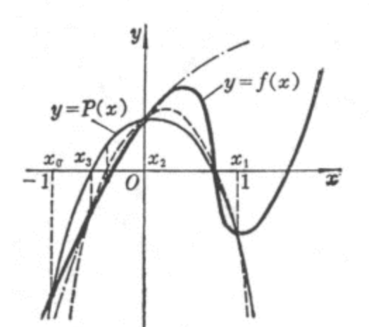
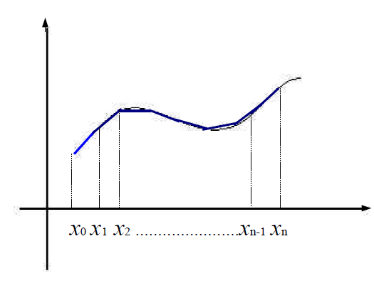

爱的深处不正涌流着企图和对方分毫不差的这种不可能实现的热望吗？这种热望不正驱使着人们将不可能由另一极端变成可能，从而引导他们走向那种悲剧性的叛离之路吗？既然相爱的人不可能完全相似，那么不如干脆使他们致力于相互之间毫不相似，使这样的叛离完整地作用于媚态。
# 第一章 相关基础数学知识Theorem : If the function f f f x 0 x_0 x 0 f f f x 0 x_0 x 0
Notation : C [ a , b ] C[a,b] C [ a , b ] [ a , b ] [a,b] [ a , b ]
Theorem (Generalized Rolle’s Theorem): Suppose f ∈ C [ a , b ] f\in C[a,b] f ∈ C [ a , b ] n n n ( a , b ) (a,b) ( a , b ) f ( x ) f(x) f ( x ) n + 1 n+1 n + 1 x 0 , x 1 , . . . , x n x_0,x_1,...,x_n x 0 , x 1 , . . . , x n [ a , b ] [a,b] [ a , b ] c c c ( a , b ) (a,b) ( a , b ) f ( n ) ( c ) = 0 f^{(n)}(c)=0 f ( n ) ( c ) = 0
Theorem (Taylor’s Theorem): f ( x ) = P n ( x ) + R n ( x ) f(x)=P_n(x)+R_n(x) f ( x ) = P n ( x ) + R n ( x ) P n ( x ) = ∑ k = 0 n f ( k ) ( x ) k ! ( x − x 0 ) k P_n(x)=\sum_{k=0}^n\frac{f^{(k)}(x)}{k!}(x-x_0)^{k} P n ( x ) = ∑ k = 0 n k ! f ( k ) ( x ) ( x − x 0 ) k R n ( x ) = f ( n + 1 ) ( ξ ( x ) ) ( n + 1 ) ! ( x − x 0 ) n + 1 R_n(x)=\frac{f^{(n+1)(\xi(x))}}{(n+1)!}(x-x_0)^{n+1} R n ( x ) = ( n + 1 ) ! f ( n + 1 ) ( ξ ( x ) ) ( x − x 0 ) n + 1 ξ ( x ) \xi(x) ξ ( x ) x x x x 0 x_0 x 0
Definition : If p ∗ p^* p ∗ p p p absolute error is ∣ p − p ∗ ∣ |p-p^*| ∣ p − p ∗ ∣ relative error is ∣ p − p ∗ ∣ ∣ p ∣ \frac{|p-p^*|}{|p|} ∣ p ∣ ∣ p − p ∗ ∣ p ≠ 0 p\neq 0 p = 0
Definition : The number p ∗ p^* p ∗ p p p t t t significant digit if t t t ∣ p − p ∗ ∣ ∣ p ∣ < 5 × 1 0 − t \frac{|p-p^*|}{|p|}<5\times 10^{-t} ∣ p ∣ ∣ p − p ∗ ∣ < 5 × 1 0 − t
Definition : An algorithm is said to be stable when small changes in the initial data can produce correspondingly small changes in final results. Some algorithm are stable only for certain choices of initial data, these cases are called conditionally stable.
Definition : Suppose that E 0 E_0 E 0 E n E_n E n n n n
If E n ≈ n C E 0 E_n\approx nCE_0 E n ≈ n C E 0 C C C n n n linear .
If E n ≈ C n E 0 E_n\approx C^nE_0 E n ≈ C n E 0 C > 1 C>1 C > 1 exponential .
Definition : Suppose { β n } n = 1 ∞ \{\beta_n\}^{\infty}_{n=1} { β n } n = 1 ∞ { α n } n = 1 ∞ \{\alpha_n\}^{\infty}_{n=1} { α n } n = 1 ∞ α \alpha α
If a positive constant K K K ∣ α n − α ∣ ≤ K ∣ β n ∣ |\alpha_n-\alpha|\leq K|\beta_n| ∣ α n − α ∣ ≤ K ∣ β n ∣ { α } n = 1 ∞ \{\alpha\}^\infty_{n=1} { α } n = 1 ∞ α \alpha α rate of convergence O ( β n ) O(\beta_n) O ( β n ) α n = α + O ( β n ) \alpha_n=\alpha+O(\beta_n) α n = α + O ( β n )
Property (Operator errors):
α n + β n = α + β + O ( ε α + ε β ) \alpha_n+\beta_n=\alpha+\beta+O(\varepsilon_\alpha+\varepsilon_\beta) α n + β n = α + β + O ( ε α + ε β ) α n β n = α β + α O ( ε β ) + β O ( ε α ) + O ( ε α ε β ) \alpha_n\beta_n=\alpha\beta+\alpha O(\varepsilon_\beta)+\beta O(\varepsilon_\alpha)+O(\varepsilon_\alpha\varepsilon_\beta) α n β n = α β + α O ( ε β ) + β O ( ε α ) + O ( ε α ε β )
Example : α n = n + 1 n 2 , β n = 1 n \alpha_n=\frac{n+1}{n^2},\beta_n=\frac{1}{n} α n = n 2 n + 1 , β n = n 1 ∣ α n − 0 ∣ < n + n n 2 = 2 × 1 n |\alpha_n-0|<\frac{n+n}{n^2}=2\times\frac{1}{n} ∣ α n − 0 ∣ < n 2 n + n = 2 × n 1 α n = 0 + O ( 1 n ) \alpha_n=0+O(\frac{1}{n}) α n = 0 + O ( n 1 )
Definition : Suppose
lim x → 0 G ( x ) = 0 , lim x → 0 F ( x ) = L \lim_{x\rightarrow 0}G(x)=0,\lim_{x\rightarrow 0}F(x)=L
x → 0 lim G ( x ) = 0 , x → 0 lim F ( x ) = L
If a positive constant K K K ∣ F ( x ) − L ∣ ≤ K ∣ G ( x ) ∣ |F(x)-L|\leq K|G(x)| ∣ F ( x ) − L ∣ ≤ K ∣ G ( x ) ∣ F ( x ) = L + O ( G ( x ) ) F(x)=L+O(G(x)) F ( x ) = L + O ( G ( x ) )
Example : c o s ( x ) + 1 2 x 2 = 1 + O ( x 4 ) cos(x)+\frac{1}{2}x^2=1+O(x^4) c o s ( x ) + 2 1 x 2 = 1 + O ( x 4 )
Definition : A mathematical problem is said to be well-posed if a solution:
exists,
is unique,
depends continuously on input data
Otherwise, the problem is ill-posed .
# 第二章 一元方程的近似解Definition : The system of m m m n n n f f f R n \mathbb{R}^n R n R m \mathbb{R}^m R m
f ( x ) = ( f 1 ( x ) , . . . , f m ( x ) ) T \textbf{f}(\textbf{x})=(f_1(\textbf{x}),...,f_m(\textbf{x}))^T
f ( x ) = ( f 1 ( x ) , . . . , f m ( x ) ) T
The function f 1 , f 2 , . . , f m f_1,f_2,..,f_m f 1 , f 2 , . . , f m coordinate functions of f .
The function f is continuous at x 0 ∈ D x_0\in D x 0 ∈ D lim x → x 0 f ( x ) = f ( x 0 ) \lim_{x\rightarrow x_0}\textbf{f}(\textbf{x})=\textbf{f}(\textbf{x}_0) lim x → x 0 f ( x ) = f ( x 0 )
Theorem : Let f f f D ⊂ R n D\subset \mathbb{R}^n D ⊂ R n R \mathbb{R} R x 0 ∈ D x_0\in D x 0 ∈ D
∣ ∂ f ( x ) ∂ x j ∣ ≤ K , j = 1 , 2 , . . . , n |\frac{\partial f(\textbf{x})}{\partial x_j}|\leq K,j=1,2,...,n
∣ ∂ x j ∂ f ( x ) ∣ ≤ K , j = 1 , 2 , . . . , n
whenever ∣ x j − x 0 j ∣ ≤ δ |x_j-x_{0j}|\leq\delta ∣ x j − x 0 j ∣ ≤ δ f f f x 0 \textbf{x}_0 x 0
# Bisection (Binary search).Theorem : Suppose that f ∈ C [ a , b ] f\in C[a,b] f ∈ C [ a , b ] f ( a ) f ( b ) < 0 f(a)f(b)<0 f ( a ) f ( b ) < 0 { p n } 1 ∞ \{p_n\}^\infty_1 { p n } 1 ∞ p p p f f f f ( p ) = 0 f(p)=0 f ( p ) = 0
∣ p n − p ∣ ≤ b − a 2 n |p_n-p|\leq\frac{b-a}{2^ n}
∣ p n − p ∣ ≤ 2 n b − a
So p n = p + O ( 1 2 n ) p_n=p+O(\frac{1}{2^n}) p n = p + O ( 2 n 1 )
# Fixed Point MethodDefinition : Fixed point of given function g : R → R g:\mathbb{R}\rightarrow\mathbb{R} g : R → R x ∗ x^* x ∗ x ∗ = g ( x ∗ ) x^*=g(x^*) x ∗ = g ( x ∗ )
For given equation f ( x ) = 0 f(x)=0 f ( x ) = 0 x = g ( x ) x=g(x) x = g ( x )
Example : f ( x ) = 0 ⇔ g ( x ) = x f(x)=0\Leftrightarrow g(x)=x f ( x ) = 0 ⇔ g ( x ) = x g ( x ) = x − f ( x ) g(x)=x-f(x) g ( x ) = x − f ( x ) g ( x ) = x + 3 f ( x ) g(x)=x+3f(x) g ( x ) = x + 3 f ( x )
To approximate the fixed point of a function g ( x ) g(x) g ( x ) p 0 p_0 p 0
p n = g ( p n − 1 ) , n = 1 , 2 , 3 , . . . p_n=g(p_{n-1}),n=1,2,3,...
p n = g ( p n − 1 ) , n = 1 , 2 , 3 , . . .
If the sequence converges to p p p g ( x ) g(x) g ( x )
p = lim n → ∞ p n = lim n → ∞ g ( p n ) = g ( lim n → ∞ p n ) = g ( p ) p=\lim_{n\rightarrow\infty}p_n=\lim_{n\rightarrow\infty}g(p_n)=g(\lim_{n\rightarrow \infty}p_n)=g(p)
p = n → ∞ lim p n = n → ∞ lim g ( p n ) = g ( n → ∞ lim p n ) = g ( p )
This technique is called fixed point iteration (or functional iteration).
Theorem : If g ( x ) ∈ C [ a , b ] g(x)\in C[a,b] g ( x ) ∈ C [ a , b ] g ( x ) ∈ [ a , b ] g(x)\in[a,b] g ( x ) ∈ [ a , b ] x ∈ [ a , b ] x\in[a,b] x ∈ [ a , b ] g ( x ) g(x) g ( x ) [ a , b ] [a,b] [ a , b ] g ′ ( x ) g'(x) g ′ ( x ) ( a , b ) (a,b) ( a , b ) k < 1 k<1 k < 1 ∣ g ′ ( x ) ∣ ≤ k |g'(x)|\leq k ∣ g ′ ( x ) ∣ ≤ k x ∈ ( a , b ) x\in(a,b) x ∈ ( a , b )
The proof is easily obtained by proof by contradiction considering the geometric feature.
Corollary : Obviously we have p n − p = ∣ g ( p n − 1 ) − g ( p ) ∣ = ∣ g ′ ( ξ ) ∣ ∣ p n − 1 − p ∣ p_n-p=|g(p_{n-1})-g(p)|=|g'(\xi)||p_{n-1}-p| p n − p = ∣ g ( p n − 1 ) − g ( p ) ∣ = ∣ g ′ ( ξ ) ∣ ∣ p n − 1 − p ∣ ξ ∈ ( a , b ) \xi\in(a,b) ξ ∈ ( a , b ) ∣ p n − p ∣ ≤ k n ∣ p 0 − p ∣ |p_n-p|\leq k^n|p_0-p| ∣ p n − p ∣ ≤ k n ∣ p 0 − p ∣ k < 1 k<1 k < 1 p n = p + O ( k n ) p_n=p+O(k^n) p n = p + O ( k n )
What’s more, ∣ p n − p ∣ ≤ k n ∣ p 0 − p ∣ ≤ k n m a x ( p 0 − a , b − p 0 ) |p_n-p|\leq k^n|p_0-p|\leq k^nmax(p_0-a,b-p_0) ∣ p n − p ∣ ≤ k n ∣ p 0 − p ∣ ≤ k n m a x ( p 0 − a , b − p 0 )
∣ p n − p 0 ∣ ≤ ∣ p n − p n − 1 ∣ + ∣ p n − 1 − p n − 2 ∣ + . . . + ∣ p 1 − p 0 ∣ ≤ k n 1 − k ∣ p 1 − p 0 ∣ |p_n-p_0|\leq |p_n-p_{n-1}|+|p_{n-1}-p_{n-2}|+...+|p_1-p_0|\leq \frac{k^n}{1-k}|p_1-p_0|
∣ p n − p 0 ∣ ≤ ∣ p n − p n − 1 ∣ + ∣ p n − 1 − p n − 2 ∣ + . . . + ∣ p 1 − p 0 ∣ ≤ 1 − k k n ∣ p 1 − p 0 ∣
# Newton’s MethodSuppose that f ∈ C 2 [ a , b ] f\in C^2[a,b] f ∈ C 2 [ a , b ] x ∗ x^* x ∗ f ( x ) = 0 f(x)=0 f ( x ) = 0 x ˉ ∈ [ a , b ] \bar{x}\in[a,b] x ˉ ∈ [ a , b ] x ∗ x^* x ∗ f ′ ( x ˉ ) ≠ 0 f'(\bar{x})\neq 0 f ′ ( x ˉ ) = 0 ∣ x ˉ − x ∗ ∣ |\bar{x}-x^*| ∣ x ˉ − x ∗ ∣
f ( x ) = f ( x ˉ ) + ( x − x ˉ ) f ′ ( x ˉ ) + ( x − x ˉ ) 2 2 f ′ ′ ( ξ ) f(x)=f(\bar{x})+(x-\bar{x})f'(\bar{x})+\frac{(x-\bar{x})^2}{2}f''(\xi)
f ( x ) = f ( x ˉ ) + ( x − x ˉ ) f ′ ( x ˉ ) + 2 ( x − x ˉ ) 2 f ′ ′ ( ξ )
where ξ \xi ξ x x x x ˉ \bar{x} x ˉ
0 = f ( x ∗ ) ≈ f ( x ˉ ) + ( x ∗ − x ˉ ) f ′ ( x ˉ ) x ∗ ≈ x ˉ − f ( x ˉ ) f ′ ( x ˉ ) 0=f(x^*)\approx f(\bar{x})+(x^*-\bar{x})f'(\bar{x})\\
x^*\approx\bar{x}-\frac{f(\bar{x})}{f'(\bar{x})}
0 = f ( x ∗ ) ≈ f ( x ˉ ) + ( x ∗ − x ˉ ) f ′ ( x ˉ ) x ∗ ≈ x ˉ − f ′ ( x ˉ ) f ( x ˉ )
Theorem : Let f ∈ C 2 [ a , b ] f\in C^2[a,b] f ∈ C 2 [ a , b ] p ∈ [ a , b ] p\in[a,b] p ∈ [ a , b ] f ( p ) = 0 f(p)=0 f ( p ) = 0 f ′ ( p ) ≠ 0 f'(p)\neq 0 f ′ ( p ) = 0 δ > 0 \delta>0 δ > 0 p 0 ∈ [ p − δ , p + δ ] p_0\in[p-\delta,p+\delta] p 0 ∈ [ p − δ , p + δ ] p n = p n − 1 − f ( p n − 1 ) f ′ ( p n − 1 ) p_n=p_{n-1}-\frac{f(p_{n-1})}{f'(p_{n-1})} p n = p n − 1 − f ′ ( p n − 1 ) f ( p n − 1 ) p p p
The proof is based on the fixed point iteration g ( x ) = x − f ( x ) f ′ ( x ) g(x)=x-\frac{f(x)}{f'(x)} g ( x ) = x − f ′ ( x ) f ( x )
# Secant MethodSimilar to Newton’s method:
p n = p n − 1 − f ( p n − 1 ) f ( p n − 1 ) − f ( p n − 2 ) p n − 1 − p n − 2 p_{n}=p_{n-1}-\frac{f(p_{n-1})}{\frac{f(p_{n-1})-f(p_{n-2})}{p_{n-1}-p_{n-2}}}
p n = p n − 1 − p n − 1 − p n − 2 f ( p n − 1 ) − f ( p n − 2 ) f ( p n − 1 )
# Method of False PositionImproved Secant Method. If f ( p 0 ) f ( p 1 ) < 0 f(p_0)f(p_1)<0 f ( p 0 ) f ( p 1 ) < 0
p n = { p n − 1 − f ( p n − 1 ) f ( p n − 1 ) − f ( p n − 2 ) p n − 1 − p n − 2 p n − 1 − f ( p n − 1 ) f ( p n − 1 ) − f ( p n − 3 ) p n − 1 − p n − 3 p_n=\begin{cases}
p_{n-1}-\frac{f(p_{n-1})}{\frac{f(p_{n-1})-f(p_{n-2})}{p_{n-1}-p_{n-2}}}\\
p_{n-1}-\frac{f(p_{n-1})}{\frac{f(p_{n-1})-f(p_{n-3})}{p_{n-1}-p_{n-3}}}\\
\end{cases}
p n = ⎩ ⎪ ⎪ ⎨ ⎪ ⎪ ⎧ p n − 1 − p n − 1 − p n − 2 f ( p n − 1 ) − f ( p n − 2 ) f ( p n − 1 ) p n − 1 − p n − 1 − p n − 3 f ( p n − 1 ) − f ( p n − 3 ) f ( p n − 1 )
dependent on f ( p n − 1 ) f ( p n − 2 ) < 0 f(p_{n-1})f(p_{n-2})<0 f ( p n − 1 ) f ( p n − 2 ) < 0 f ( p n − 1 ) f ( p n − 3 ) < 0 f(p_{n-1})f(p_{n-3})<0 f ( p n − 1 ) f ( p n − 3 ) < 0
Line1 across ( p n − 1 , f ( p n − 1 ) ) (p_{n-1},f(p_{n-1})) ( p n − 1 , f ( p n − 1 ) ) ( p n − 2 , f ( p n − 2 ) ) (p_{n-2},f(p_{n-2})) ( p n − 2 , f ( p n − 2 ) )
Line2 across ( p n − 1 , f ( p n − 1 ) ) (p_{n-1},f(p_{n-1})) ( p n − 1 , f ( p n − 1 ) ) ( p n − 3 , f ( p n − 3 ) ) (p_{n-3},f(p_{n-3})) ( p n − 3 , f ( p n − 3 ) )
We can choose which line to use by where zero point locates: [ p n − 2 , p n − 1 ] [p_{n-2},p_{n-1}] [ p n − 2 , p n − 1 ] [ p n − 1 , p n − 3 ] [p_{n-1},p_{n-3}] [ p n − 1 , p n − 3 ]
# Error Analysis for IterationDefinition : If positive constants λ \lambda λ α \alpha α
lim n → ∞ ∣ p n + 1 − p ∣ ∣ p n − p ∣ α = λ \lim_{n\rightarrow\infty}\frac{|p_{n+1}-p|}{|p_n-p|^{\alpha}}=\lambda
n → ∞ lim ∣ p n − p ∣ α ∣ p n + 1 − p ∣ = λ
then { p n } n = 0 ∞ \{p_n\}^\infty_{n=0} { p n } n = 0 ∞ p p p order α \alpha α asymptotic error constant λ \lambda λ
Higher the order is, more rapidly the sequence converges.
# Fixed point methodTheorem : If ∣ g ′ ( x ) ∣ ≤ k < 1 |g'(x)|\leq k<1 ∣ g ′ ( x ) ∣ ≤ k < 1 x ∈ ( a , b ) x\in(a,b) x ∈ ( a , b ) linearly to the unique fixed point.
lim n → ∞ ∣ p n + 1 − p ∣ ∣ p n − p ∣ 1 = lim n → ∞ ∣ g ( p n ) − g ( p ) ∣ ∣ p n − p ∣ = lim n → ∞ ∣ g ′ ( ξ n ) ∣ = ∣ g ′ ( p ) ∣ = C o n s t a n t ξ n ∈ ( p n , p ) \lim_{n\rightarrow\infty}\frac{|p_{n+1}-p|}{|p_n-p|^1}=\lim_{n\rightarrow\infty}\frac{|g(p_n)-g(p)|}{|p_n-p|}=\lim_{n\rightarrow\infty}|g'(\xi_n)|=|g'(p)|=Constant\\
\xi_n\in(p_n,p)
n → ∞ lim ∣ p n − p ∣ 1 ∣ p n + 1 − p ∣ = n → ∞ lim ∣ p n − p ∣ ∣ g ( p n ) − g ( p ) ∣ = n → ∞ lim ∣ g ′ ( ξ n ) ∣ = ∣ g ′ ( p ) ∣ = C o n s t a n t ξ n ∈ ( p n , p )
So α = 1 \alpha=1 α = 1 g ′ ( p ) = 0 g'(p)=0 g ′ ( p ) = 0
What’s more, if g ′ ( p ) = 0 g'(p)=0 g ′ ( p ) = 0 ∣ g ′ ′ ( p ) ∣ ≤ M |g''(p)|\leq M ∣ g ′ ′ ( p ) ∣ ≤ M
lim n → ∞ ∣ p n + 1 − p ∣ ∣ p n − p ∣ 2 = lim n → ∞ ∣ g ( p n ) − g ( p ) ∣ ∣ p n − p ∣ 2 = lim n → ∞ ∣ g ( p ) + g ′ ( p ) ( p n − p ) + g ′ ′ ( ξ ) 2 ( p n − p ) 2 − g ( p ) ∣ ∣ p n − p ∣ 2 = lim n → ∞ ∣ g ′ ′ ( ξ ) ∣ 2 = M 2 \lim_{n\rightarrow\infty}\frac{|p_{n+1}-p|}{|p_n-p|^2}=\lim_{n\rightarrow\infty}\frac{|g(p_n)-g(p)|}{|p_n-p|^2}\\
=\lim_{n\rightarrow\infty}\frac{|g(p)+g'(p)(p_{n}-p)+\frac{g''(\xi)}{2}(p_n-p)^2-g(p)|}{|p_n-p|^2}\\
=\lim_{n\rightarrow\infty}\frac{|g''(\xi)|}{2}=\frac{M}{2}
n → ∞ lim ∣ p n − p ∣ 2 ∣ p n + 1 − p ∣ = n → ∞ lim ∣ p n − p ∣ 2 ∣ g ( p n ) − g ( p ) ∣ = n → ∞ lim ∣ p n − p ∣ 2 ∣ g ( p ) + g ′ ( p ) ( p n − p ) + 2 g ′ ′ ( ξ ) ( p n − p ) 2 − g ( p ) ∣ = n → ∞ lim 2 ∣ g ′ ′ ( ξ ) ∣ = 2 M
So α = 2 \alpha=2 α = 2 g ′ ′ ( x ) g''(x) g ′ ′ ( x )
If ∣ g ′ ( p ) ∣ > 1 |g'(p)|>1 ∣ g ′ ( p ) ∣ > 1
# From Root to Fix pointFor root finding problem f ( x ) = 0 f(x)=0 f ( x ) = 0 g ( x ) g(x) g ( x )
g ( x ) = x − ϕ ( x ) f ( x ) , ϕ ( x ) ≠ 0 g(x)=x-\phi(x)f(x),\phi(x)\neq 0
g ( x ) = x − ϕ ( x ) f ( x ) , ϕ ( x ) = 0
so g ( x ) = x ⇒ f ( x ) = 0 g(x)=x\Rightarrow f(x)=0 g ( x ) = x ⇒ f ( x ) = 0
Since g ′ ( x ) = 1 − ϕ ′ ( x ) f ( x ) − ϕ ( x ) f ′ ( x ) g'(x)=1-\phi'(x)f(x)-\phi(x)f'(x) g ′ ( x ) = 1 − ϕ ′ ( x ) f ( x ) − ϕ ( x ) f ′ ( x ) x = p x=p x = p g ′ ( p ) = 1 − ϕ ( p ) f ′ ( p ) g'(p)=1-\phi(p)f'(p) g ′ ( p ) = 1 − ϕ ( p ) f ′ ( p ) g ′ ( p ) = 0 g'(p)=0 g ′ ( p ) = 0 ϕ ( x ) = 1 f ′ ( p ) \phi(x)=\frac{1}{f'(p)} ϕ ( x ) = f ′ ( p ) 1
Definition : A solution p p p f ( x ) = 0 f(x)=0 f ( x ) = 0 zero of multiplicity m m m f ( x ) f(x) f ( x ) x ≠ p x\neq p x = p
f ( x ) = ( x − p ) m q ( x ) lim x → p q ( x ) ≠ 0 f(x)=(x-p)^mq(x)\\
\lim_{x\rightarrow p}q(x)\neq 0
f ( x ) = ( x − p ) m q ( x ) x → p lim q ( x ) = 0
when it comes to Newton’s method, g ( x ) = x − f ( x ) / f ′ ( x ) g(x)=x-f(x)/f'(x) g ( x ) = x − f ( x ) / f ′ ( x )
g ( x ) = x − ( x − p ) m q ( x ) m ( x − p ) m − 1 q ( x ) + ( x − p ) m q ′ ( x ) = x − ( x − p ) q ( x ) m q ( x ) + ( x − p ) q ′ ( x ) lim x → p g ′ ( x ) = 1 − 1 m ≠ 0 g(x)=x-\frac{(x-p)^mq(x)}{m(x-p)^{m-1}q(x)+(x-p)^mq'(x)}\\
=x-(x-p)\frac{q(x)}{mq(x)+(x-p)q'(x)}\\
\lim_{x\rightarrow p}g'(x)=1-\frac{1}{m}\neq 0
g ( x ) = x − m ( x − p ) m − 1 q ( x ) + ( x − p ) m q ′ ( x ) ( x − p ) m q ( x ) = x − ( x − p ) m q ( x ) + ( x − p ) q ′ ( x ) q ( x ) x → p lim g ′ ( x ) = 1 − m 1 = 0
注：这里我存疑，因为都是极限意义下，x = p x=p x = p g ( x ) g(x) g ( x )
但这是数值计算，实际中x x x p p p
# Aitken’s Δ2 MethodSuppose { p n } n ∞ = 0 \{p_n\}^\infty_n=0 { p n } n ∞ = 0 linearly convergent sequence (α = 1 \alpha=1 α = 1 p p p
lim n → ∞ p n + 1 − p p n − p = λ ≠ 0 \lim_{n\rightarrow\infty}\frac{p_{n+1}-p}{p_n-p}=\lambda\neq 0
n → ∞ lim p n − p p n + 1 − p = λ = 0
So when n is large enough:
p n + 1 − p p n − p ≈ p n + 2 − p p n + 1 − p p ≈ p n − ( p n + 1 − p n ) 2 p n + 2 − 2 p n + 1 + p n \frac{p_{n+1}-p}{p_n-p}\approx\frac{p_{n+2}-p}{p_{n+1}-p}\\
p\approx p_n-\frac{(p_{n+1}-p_n)^2}{p_{n+2}-2p_{n+1}+p_n}
p n − p p n + 1 − p ≈ p n + 1 − p p n + 2 − p p ≈ p n − p n + 2 − 2 p n + 1 + p n ( p n + 1 − p n ) 2
Aitken’s Δ 2 \Delta^2 Δ 2
q n = p n − ( p n + 1 − p n ) 2 p n + 2 − 2 p n + 1 + p n q_n=p_n-\frac{(p_{n+1}-p_n)^2}{p_{n+2}-2p_{n+1}+p_n}
q n = p n − p n + 2 − 2 p n + 1 + p n ( p n + 1 − p n ) 2
{ q n } n ∞ \{q_n\}^\infty_{n} { q n } n ∞ p p p { p n } \{p_n\} { p n }
Definition : The forward difference Δ p n \Delta p_n Δ p n { p n } n ∞ \{p_n\}^\infty_n { p n } n ∞
Δ p n = p n + 1 − p n \Delta p_n=p_{n+1}-p_n
Δ p n = p n + 1 − p n
So q n = p n − ( Δ p n ) 2 Δ 2 p n q_n=p_n-\frac{(\Delta p_n)^2}{\Delta^2p_n} q n = p n − Δ 2 p n ( Δ p n ) 2
Theorem : lim n → ∞ q n − p p n − p = 0 \lim_{n\rightarrow\infty}\frac{q_n-p}{p_n-p}=0 lim n → ∞ p n − p q n − p = 0 q n q_n q n p n p_n p n
# Steffensen’s Method (Aitken’s Method for fixed point iteration)Repeat:
{ p 0 p 1 = g ( p 0 ) p 2 = g ( p 1 ) p 3 = p 0 − ( Δ p 0 ) 2 Δ 2 p 0 { p 3 p 4 = g ( p 3 ) p 5 = g ( p 4 ) p 6 = p 3 − ( Δ p 3 ) 2 Δ 2 p 3 { p 6 p 7 = g ( p 6 ) p 8 = g ( p 7 ) p 9 = p 6 − ( Δ p 6 ) 2 Δ 2 p 6 . . . . . . \begin{cases}p_0\\p_1=g(p_0)\\p_2=g(p_1)\\p_3=p_0-\frac{(\Delta p_0)^2}{\Delta^2p_0}\end{cases} \begin{cases}p_3\\p_4=g(p_3)\\p_5=g(p_4)\\p_6=p_3-\frac{(\Delta p_3)^2}{\Delta^2p_3}\end{cases}
\begin{cases}p_6\\p_7=g(p_6)\\p_8=g(p_7)\\p_9=p_6-\frac{(\Delta p_6)^2}{\Delta^2p_6}\end{cases}......
⎩ ⎪ ⎪ ⎪ ⎪ ⎪ ⎨ ⎪ ⎪ ⎪ ⎪ ⎪ ⎧ p 0 p 1 = g ( p 0 ) p 2 = g ( p 1 ) p 3 = p 0 − Δ 2 p 0 ( Δ p 0 ) 2 ⎩ ⎪ ⎪ ⎪ ⎪ ⎪ ⎨ ⎪ ⎪ ⎪ ⎪ ⎪ ⎧ p 3 p 4 = g ( p 3 ) p 5 = g ( p 4 ) p 6 = p 3 − Δ 2 p 3 ( Δ p 3 ) 2 ⎩ ⎪ ⎪ ⎪ ⎪ ⎪ ⎨ ⎪ ⎪ ⎪ ⎪ ⎪ ⎧ p 6 p 7 = g ( p 6 ) p 8 = g ( p 7 ) p 9 = p 6 − Δ 2 p 6 ( Δ p 6 ) 2 . . . . . .
Theorem : If g ′ ( p ) ≠ 1 g'(p)\neq 1 g ′ ( p ) = 1 δ > 0 \delta>0 δ > 0 g ∈ C 3 [ p − δ , p + δ ] g\in C^3[p-\delta,p+\delta] g ∈ C 3 [ p − δ , p + δ ] α = 2 \alpha=2 α = 2 p 0 ∈ [ p − δ , p + δ ] p_0\in[p-\delta,p+\delta] p 0 ∈ [ p − δ , p + δ ]
# Zeros of Polynomials and Muller’s MethodFind the root of given polynomial:
f ( x ) = x n + a 1 x n − 1 + . . . + a n − 1 x + a n f(x)=x^n+a_1x^{n-1}+...+a_{n-1}x+a_n
f ( x ) = x n + a 1 x n − 1 + . . . + a n − 1 x + a n
initially we have three points: ( x 0 , f ( x 0 ) ) , ( x 1 , f ( x 1 ) ) , ( x 2 , f ( x 2 ) ) (x_0,f(x_0)),(x_1,f(x_1)),(x_2,f(x_2)) ( x 0 , f ( x 0 ) ) , ( x 1 , f ( x 1 ) ) , ( x 2 , f ( x 2 ) ) parabola across the three points:

There are two meeting points of x-axis and the parabola, we choose the one which is closer to x 2 x_2 x 2 x 3 x_3 x 3 ( x 1 , f ( x 1 ) ) , ( x 2 , f ( x 2 ) ) , ( x 3 , f ( x 3 ) ) (x_1,f(x_1)),(x_2,f(x_2)),(x_3,f(x_3)) ( x 1 , f ( x 1 ) ) , ( x 2 , f ( x 2 ) ) , ( x 3 , f ( x 3 ) )
When ∣ x n + 1 − x n ∣ < ε |x_{n+1}-x_n|<\varepsilon ∣ x n + 1 − x n ∣ < ε
# 第三章 差值和多项式拟合Theorem (Weierstrass Approximation Theorem): Suppose f f f [ a , b ] [a,b] [ a , b ] ε > 0 \varepsilon>0 ε > 0 P ( x ) P(x) P ( x ) [ a , b ] [a,b] [ a , b ]
∀ x ∈ [ a , b ] , ∣ f ( x ) − P ( x ) ∣ < ε \forall x\in[a,b],\;|f(x)-P(x)|<\varepsilon
∀ x ∈ [ a , b ] , ∣ f ( x ) − P ( x ) ∣ < ε
# the n-th Lagrange Interpolating PolynomialL n , k ( x ) = ∏ i = 0 , i ≠ k n x − x i x k − x i L n , k ( x ) = { 0 x ≠ x k 1 x = x k P ( x ) = ∑ k = 0 n f ( x k ) L n , k ( x ) L_{n,k}(x)=\prod_{i=0,i\neq k}^n\frac{x-x_i}{x_k-x_i}\\
L_{n,k}(x)=\begin{cases}0&x\neq x_k\\1&x=x_k\end{cases} \\
P(x)=\sum_{k=0}^nf(x_k)L_{n,k}(x)
L n , k ( x ) = i = 0 , i = k ∏ n x k − x i x − x i L n , k ( x ) = { 0 1 x = x k x = x k P ( x ) = k = 0 ∑ n f ( x k ) L n , k ( x )
Theorem : Suppose x 0 , x 1 , . . , x n x_0,x_1,..,x_n x 0 , x 1 , . . , x n [ a , b ] [a,b] [ a , b ] f ∈ C n + 1 [ a , b ] f\in C^{n+1}[a,b] f ∈ C n + 1 [ a , b ] x ∈ [ a , b ] x\in[a,b] x ∈ [ a , b ] ξ ( x ) ∈ ( a , b ) \xi(x)\in(a,b) ξ ( x ) ∈ ( a , b )
f ( x ) = P n ( x ) + f ( n + 1 ) ( ξ ( x ) ) ( n + 1 ) ! ( x − x 0 ) ( x − x 1 ) . . . ( x − x n ) f(x)=P_n(x)+\frac{f^{(n+1)}(\xi(x))}{(n+1)!}(x-x_0)(x-x_1)...(x-x_n)
f ( x ) = P n ( x ) + ( n + 1 ) ! f ( n + 1 ) ( ξ ( x ) ) ( x − x 0 ) ( x − x 1 ) . . . ( x − x n )
Where P n ( x ) P_n(x) P n ( x )
The error is related to h = ∣ b − a ∣ h=|b-a| h = ∣ b − a ∣ ∣ f ( n + 1 ) ∣ ≤ M n + 1 |f^{(n+1)}|\leq M_{n+1} ∣ f ( n + 1 ) ∣ ≤ M n + 1
∣ f ( x ) − P 1 ( x ) ∣ = ∣ f ′ ′ ( ξ ) ∣ 2 ∣ ( x − x 0 ) ( x − x 1 ) ∣ ≤ M 2 h 2 8 ∣ f ( x ) − P n ( x ) ∣ ≤ M n + 1 n ! h n |f(x)-P_1(x)|=\frac{|f''(\xi)|}{2}|(x-x_0)(x-x_1)|\leq\frac{M_2h^2}{8}\\
|f(x)-P_n(x)|\leq \frac{M_{n+1}}{n!}h^n
∣ f ( x ) − P 1 ( x ) ∣ = 2 ∣ f ′ ′ ( ξ ) ∣ ∣ ( x − x 0 ) ( x − x 1 ) ∣ ≤ 8 M 2 h 2 ∣ f ( x ) − P n ( x ) ∣ ≤ n ! M n + 1 h n
Runge Phenomenon : when n n n
# Data Approximation and Neville’s MethodTheorem : Consider n n n x 1 , x 2 , . . . , x n x_1,x_2,...,x_n x 1 , x 2 , . . . , x n
P 1 ( x ) = ∑ k = 0 , k ≠ j n L n , k ( x ) f ( x k ) P 2 ( x ) = ∑ k = 0 , k ≠ i n L n , k ( x ) f ( x k ) P_1(x)=\sum_{k=0,k\neq j}^nL_{n,k}(x)f(x_k)\\
P_2(x)=\sum_{k=0,k\neq i}^nL_{n,k}(x)f(x_k) \\
P 1 ( x ) = k = 0 , k = j ∑ n L n , k ( x ) f ( x k ) P 2 ( x ) = k = 0 , k = i ∑ n L n , k ( x ) f ( x k )
Then P ( x ) = ( x − x j ) P 1 ( x ) − ( x − x i ) P 2 ( x ) x i − x j P(x)=\frac{(x-x_j)P_1(x)-(x-x_i)P_2(x)}{x_i-x_j} P ( x ) = x i − x j ( x − x j ) P 1 ( x ) − ( x − x i ) P 2 ( x )
So the Lagrange Polynomial can be generate recursively.
( x 1 , x 2 , x 3 , . . . , x n − 1 , x n ) ⇒ ( x 1 , x 2 , . . , x n − 1 ) + ( x 2 , x 3 , . . . , x n ) ⇒ ( x 1 , x 2 , . . . , x n − 2 ) + 2 ( x 2 , x 3 , . . . , x n − 1 ) + ( x 3 , x 4 , . . . , x n ) ⇒ . . . (x_1,x_2,x_3,...,x_{n-1},x_n)\\
\Rightarrow(x_1,x_2,..,x_{n-1})+(x_2,x_3,...,x_n)\\
\Rightarrow (x_1,x_2,...,x_{n-2})+2(x_2,x_3,...,x_{n-1})+(x_3,x_4,...,x_n)\\
\Rightarrow ...
( x 1 , x 2 , x 3 , . . . , x n − 1 , x n ) ⇒ ( x 1 , x 2 , . . , x n − 1 ) + ( x 2 , x 3 , . . . , x n ) ⇒ ( x 1 , x 2 , . . . , x n − 2 ) + 2 ( x 2 , x 3 , . . . , x n − 1 ) + ( x 3 , x 4 , . . . , x n ) ⇒ . . .
# Divided DifferenceDefinition : The zeroth divided difference of the function f f f x i x_i x i f [ x i ] f[x_i] f [ x i ] f f f x i x_i x i
f [ x i ] = f i = f ( x i ) f[x_i]=f_i=f(x_i)
f [ x i ] = f i = f ( x i )
while the first divided difference of f f f
f [ x i , x i + 1 ] = f [ x i + 1 ] − f [ x i ] x i + 1 − x i f[x_i,x_{i+1}]=\frac{f[x_{i+1}]-f[x_i]}{x_{i+1}-x_i}
f [ x i , x i + 1 ] = x i + 1 − x i f [ x i + 1 ] − f [ x i ]
the second divided difference is
f [ x i , x i + 1 , x i + 2 ] = f [ x i + 1 , x i + 2 ] − f [ x i , x i + 1 ] x i + 2 − x i f[x_i,x_{i+1},x_{i+2}]=\frac{f[x_{i+1},x_{i+2}]-f[x_{i},x_{i+1}]}{x_{i+2}-x_i}
f [ x i , x i + 1 , x i + 2 ] = x i + 2 − x i f [ x i + 1 , x i + 2 ] − f [ x i , x i + 1 ]
Theorem : P n ( x ) P_n(x) P n ( x )
P n ( x ) = f [ x 0 ] + f [ x 0 , x 1 ] ( x − x 0 ) + f [ x 0 , x 1 , x 2 ] ( x − x 0 ) ( x − x 1 ) ( x − x 2 ) + . . . P_n(x)=f[x_0]+f[x_0,x_1](x-x_0)+f[x_0,x_1,x_2](x-x_0)(x-x_1)(x-x_2)+...
P n ( x ) = f [ x 0 ] + f [ x 0 , x 1 ] ( x − x 0 ) + f [ x 0 , x 1 , x 2 ] ( x − x 0 ) ( x − x 1 ) ( x − x 2 ) + . . .
which is known as Newton’s interpolatory divided difference formula .
Theorem : a number ξ \xi ξ ( a , b ) (a,b) ( a , b )
f [ x 0 , x 1 , . . . , x n ] = f ( n ) ( ξ ) n ! f[x_0,x_1,...,x_n]=\frac{f^{(n)}(\xi)}{n!}
f [ x 0 , x 1 , . . . , x n ] = n ! f ( n ) ( ξ )
Definition : the forward difference is defined by:
Δ f ( x i ) = f ( x i + 1 ) − f ( x i ) \Delta f(x_i)=f(x_{i+1})-f(x_i)
Δ f ( x i ) = f ( x i + 1 ) − f ( x i )
if ∀ i , x i + 1 − x i ≡ h \forall i,x_{i+1}-x_i\equiv h ∀ i , x i + 1 − x i ≡ h x = x 0 + s h x=x_0+sh x = x 0 + s h
P n ( x ) = f [ x 0 ] + f [ x 0 , x 1 ] s h + f [ x 0 , x 1 , x 2 ] s ( s − 1 ) h 2 + . . . = ∑ k = 0 n f [ x 0 , x 1 , . . . , x k ] C s k k ! h k ∵ f [ x 0 , x 1 , . . , x k ] = 1 k ! h k Δ 2 f ( x 0 ) ∴ P n ( x ) = ∑ k = 0 n C s k Δ k f ( x 0 ) P_n(x)=f[x_0]+f[x_0,x_1]sh+f[x_0,x_1,x_2]s(s-1)h^2+...\\
=\sum_{k=0}^nf[x_0,x_1,...,x_k]C_s^kk!h^k\\
\because f[x_0,x_1,..,x_k]=\frac{1}{k!h^k}\Delta^2f(x_0)\\
\therefore P_n(x)=\sum_{k=0}^nC_s^k\Delta^kf(x_0)
P n ( x ) = f [ x 0 ] + f [ x 0 , x 1 ] s h + f [ x 0 , x 1 , x 2 ] s ( s − 1 ) h 2 + . . . = k = 0 ∑ n f [ x 0 , x 1 , . . . , x k ] C s k k ! h k ∵ f [ x 0 , x 1 , . . , x k ] = k ! h k 1 Δ 2 f ( x 0 ) ∴ P n ( x ) = k = 0 ∑ n C s k Δ k f ( x 0 )
The formula is named as Newton Forward Difference Formula .
Definition : the backward difference is defined by:
▽ f ( x i ) = f ( x i ) − f ( x i − 1 ) \bigtriangledown f(x_i)=f(x_i)-f(x_{i-1})
▽ f ( x i ) = f ( x i ) − f ( x i − 1 )
So we have
f [ x n , x n − 1 ] = 1 h ▽ f ( x n ) f [ x n , x n − 1 , x n − 2 , . . . , x n − k ] = 1 k ! h k ▽ k f ( x n ) P n ( x ) = ∑ k = 0 n ( − 1 ) l C − s k ▽ k f ( x n ) w h e r e C − s k = − s ( − s − 1 ) . . . ( − s − k + 1 ) k ! f[x_n,x_{n-1}]=\frac{1}{h}\bigtriangledown f(x_n)\\
f[x_n,x_{n-1},x_{n-2},...,x_{n-k}]=\frac{1}{k!h^k}\bigtriangledown^kf(x_n)\\
P_n(x)=\sum_{k=0}^n(-1)^lC_{-s}^k\bigtriangledown^k f(x_n)\\
where\;C_{-s}^k=\frac{-s(-s-1)...(-s-k+1)}{k!}
f [ x n , x n − 1 ] = h 1 ▽ f ( x n ) f [ x n , x n − 1 , x n − 2 , . . . , x n − k ] = k ! h k 1 ▽ k f ( x n ) P n ( x ) = k = 0 ∑ n ( − 1 ) l C − s k ▽ k f ( x n ) w h e r e C − s k = k ! − s ( − s − 1 ) . . . ( − s − k + 1 )
The formula is named as Newton Backward Difference Formula .
# Hermite InterpolationProblem : Given n + 1 n+1 n + 1 x 0 , x 1 , . . . , x n x_0,x_1,...,x_n x 0 , x 1 , . . . , x n k 0 , k 1 , . . . , k n k_0,k_1,...,k_n k 0 , k 1 , . . . , k n osculating polynomial approximating a function f ∈ C m [ a , b ] f\in C^m[a,b] f ∈ C m [ a , b ] m = m a x ( k 0 , k 1 , . . . , k n ) m=max(k_0,k_1,...,k_n) m = m a x ( k 0 , k 1 , . . . , k n )
The osculating polynomial H ( x ) H(x) H ( x )
f ( x 0 ) = H ( x 0 ) , f ′ ( x 0 ) = H ′ ( x 0 ) , . . . , f ( k 0 ) ( x 0 ) = H ( k 0 ) ( x 0 ) f ( x 1 ) = H ( x 1 ) , f ′ ( x 1 ) = H ′ ( x 1 ) , . . . , f ( k 1 ) ( x 1 ) = H ( k 1 ) ( x 1 ) . . . . . . f ( x n ) = H ( x n ) , f ′ ( x n ) = H ′ ( x n ) , . . . , f ( k n ) ( x n ) = H ( k n ) ( x n ) f(x_0)=H(x_0),f'(x_0)=H'(x_0),...,f^{(k_0)}(x_0)=H^{(k_0)}(x_0)\\
f(x_1)=H(x_1),f'(x_1)=H'(x_1),...,f^{(k_1)}(x_1)=H^{(k_1)}(x_1)\\
......\\
f(x_n)=H(x_n),f'(x_n)=H'(x_n),...,f^{(k_n)}(x_n)=H^{(k_n)}(x_n)\\
f ( x 0 ) = H ( x 0 ) , f ′ ( x 0 ) = H ′ ( x 0 ) , . . . , f ( k 0 ) ( x 0 ) = H ( k 0 ) ( x 0 ) f ( x 1 ) = H ( x 1 ) , f ′ ( x 1 ) = H ′ ( x 1 ) , . . . , f ( k 1 ) ( x 1 ) = H ( k 1 ) ( x 1 ) . . . . . . f ( x n ) = H ( x n ) , f ′ ( x n ) = H ′ ( x n ) , . . . , f ( k n ) ( x n ) = H ( k n ) ( x n )
Obviously the degree of this osculating polynomial is at most K = ∑ i = 1 n k i + n K=\sum_{i=1}^nk_i+n K = ∑ i = 1 n k i + n
since the number of equation to be satisfied is K + 1 K+1 K + 1
if k 0 = k 1 = . . . = k n k_0=k_1=...=k_n k 0 = k 1 = . . . = k n
H 2 n + 1 ( x ) = ∑ j = 0 n f ( x j ) H n , j ( x ) + ∑ j = 0 n f ′ ( x j ) H ^ n , j ( x ) w h e r e H n , j ( x ) = [ 1 − 2 ( x − x j ) L n , j ′ ( x j ) ] L n , j 2 ( x ) H ^ n , j ( x ) = ( x − x j ) L n , j 2 ( x ) H_{2n+1}(x)=\sum_{j=0}^n f(x_j)H_{n,j}(x)+\sum_{j=0}^nf'(x_j)\hat{H}_{n,j}(x)\\
where\;H_{n,j}(x)=[1-2(x-x_j)L'_{n,j}(x_j)]L^2_{n,j}(x)\\
\hat{H}_{n,j}(x)=(x-x_j)L^2_{n,j}(x)
H 2 n + 1 ( x ) = j = 0 ∑ n f ( x j ) H n , j ( x ) + j = 0 ∑ n f ′ ( x j ) H ^ n , j ( x ) w h e r e H n , j ( x ) = [ 1 − 2 ( x − x j ) L n , j ′ ( x j ) ] L n , j 2 ( x ) H ^ n , j ( x ) = ( x − x j ) L n , j 2 ( x )
the error is
f ( x ) = H 2 n + 1 ( x ) + ∏ k = 0 n ( x − x k ) 2 ( 2 n + 2 ) ! f ( 2 n + 2 ) ( ξ ) f(x)=H_{2n+1}(x)+\frac{\prod_{k=0}^n(x-x_k)^2}{(2n+2)!}f^{(2n+2)}(\xi)
f ( x ) = H 2 n + 1 ( x ) + ( 2 n + 2 ) ! ∏ k = 0 n ( x − x k ) 2 f ( 2 n + 2 ) ( ξ )
# Piecewise Interpolation Linear PolynomialInstead of constructing a high-degree polynomial to approximate the function, we can construct several segments:

First construct the base function:
l 0 ( x ) = x − x 1 x 0 − x 1 , x 0 ≤ x ≤ x 1 l i ( x ) = { x − x i − 1 x i − x i − 1 x i − 1 ≤ x ≤ x i x − x i + 1 x i − x i + 1 x i ≤ x ≤ x i + 1 l n ( x ) = x − x n − 1 x n − x n − 1 , x n − 1 ≤ x ≤ x n l_0(x)=\frac{x-x_1}{x_0-x_1},x_0\leq x\leq x_1\\
l_i(x)=\begin{cases}\frac{x-x_{i-1}}{x_i-x_{i-1}}&x_{i-1}\leq x\leq x_i\\\frac{x-x_{i+1}}{x_i-x_{i+1}}&x_{i}\leq x\leq x_{i+1}
\end{cases}\\
l_n(x)=\frac{x-x_{n-1}}{x_n-x_{n-1}},x_{n-1}\leq x\leq x_n
l 0 ( x ) = x 0 − x 1 x − x 1 , x 0 ≤ x ≤ x 1 l i ( x ) = { x i − x i − 1 x − x i − 1 x i − x i + 1 x − x i + 1 x i − 1 ≤ x ≤ x i x i ≤ x ≤ x i + 1 l n ( x ) = x n − x n − 1 x − x n − 1 , x n − 1 ≤ x ≤ x n
Then the piecewise interpolation linear polynomial is:
P ( x ) = ∑ i = 0 n l i ( x ) f ( x i ) P(x)=\sum_{i=0}^nl_i(x)f(x_i)
P ( x ) = i = 0 ∑ n l i ( x ) f ( x i )
the error bounds is:
∣ f ( x ) − P ( x ) ∣ ≤ h 2 8 M |f(x)-P(x)|\leq\frac{h^2}{8}M
∣ f ( x ) − P ( x ) ∣ ≤ 8 h 2 M
where h = m a x ( x i + 1 − x i ) h=max(x_{i+1}-x_i) h = m a x ( x i + 1 − x i ) M = m a x ∣ f ′ ′ ( x ) ∣ M=max|f''(x)| M = m a x ∣ f ′ ′ ( x ) ∣
When considering the osculating polynomial and k 0 = k 1 = . . . = k n = 1 k_0=k_1=...=k_n=1 k 0 = k 1 = . . . = k n = 1
P ( x ) = ∑ i = 0 n H i ( x ) f ( x i ) + H ^ i ( x ) f ′ ( x i ) P(x)=\sum_{i=0}^n H_i(x)f(x_i)+\hat{H}_i(x)f'(x_i)
P ( x ) = i = 0 ∑ n H i ( x ) f ( x i ) + H ^ i ( x ) f ′ ( x i )
where
H i ( x ) = { ( 1 + 2 x − x i x i − 1 − x i ) ( x − x i − 1 x i − x i − 1 ) 2 x i − 1 ≤ x ≤ x i ( 1 + 2 x − x i x i + 1 − x i ) ( x − x i + 1 x i − x i + 1 ) 2 x i ≤ x ≤ x i + 1 H ^ i ( x ) = { ( x − x i ) ( x − x i − 1 x i − x i − 1 ) 2 x i − 1 ≤ x ≤ x i ( x − x i ) ( x − x i + 1 x i − x i + 1 ) 2 x i ≤ x ≤ x i + 1 H_i(x)=\begin{cases}(1+2\frac{x-x_i}{x_{i-1}-x_i})(\frac{x-x_{i-1}}{x_i-x_{i-1}})^2&x_{i-1}\leq x\leq x_i\\
(1+2\frac{x-x_i}{x_{i+1}-x_i})(\frac{x-x_{i+1}}{x_i-x_{i+1}})^2&x_{i}\leq x\leq x_{i+1}
\end{cases}\\
\hat{H}_i(x)=\begin{cases}(x-x_i)(\frac{x-x_{i-1}}{x_i-x_{i-1}})^2&x_{i-1}\leq x\leq x_i\\
(x-x_i)(\frac{x-x_{i+1}}{x_i-x_{i+1}})^2&x_i\leq x\leq x_{i+1}
\end{cases}
H i ( x ) = { ( 1 + 2 x i − 1 − x i x − x i ) ( x i − x i − 1 x − x i − 1 ) 2 ( 1 + 2 x i + 1 − x i x − x i ) ( x i − x i + 1 x − x i + 1 ) 2 x i − 1 ≤ x ≤ x i x i ≤ x ≤ x i + 1 H ^ i ( x ) = { ( x − x i ) ( x i − x i − 1 x − x i − 1 ) 2 ( x − x i ) ( x i − x i + 1 x − x i + 1 ) 2 x i − 1 ≤ x ≤ x i x i ≤ x ≤ x i + 1
# 第四章 数值微分和数值积分Formula :
f ′ ( x 0 ) ≈ f ( x 0 + h ) − f ( x 0 ) h f ′ ( x 0 ) ≈ f ( x 0 ) − f ( x 0 − h ) h f ′ ( x 0 ) ≈ f ( x 0 + h ) − f ( x 0 − h ) 2 h f'(x_0)\approx \frac{f(x_0+h)-f(x_0)}{h}\\
f'(x_0)\approx \frac{f(x_0)-f(x_0-h)}{h}\\
f'(x_0)\approx \frac{f(x_0+h)-f(x_0-h)}{2h}
f ′ ( x 0 ) ≈ h f ( x 0 + h ) − f ( x 0 ) f ′ ( x 0 ) ≈ h f ( x 0 ) − f ( x 0 − h ) f ′ ( x 0 ) ≈ 2 h f ( x 0 + h ) − f ( x 0 − h )
∵ f ( x ) = ∑ k = 0 n f ( x k ) L n , k ( x ) + ( x − x 0 ) . . . ( x − x n ) ( n + 1 ) ! f ( n + 1 ) ( ξ ) ∴ f ′ ( x j ) = ∑ k = 0 n f ( x k ) L n , k ′ ( x j ) + f ( n + 1 ) ( ξ ) ( n + 1 ) ! ∏ k = 0 , k ≠ j n ( x j − x k ) \because f(x)=\sum_{k=0}^nf(x_k)L_{n,k}(x)+\frac{(x-x_0)...(x-x_n)}{(n+1)!}f^{(n+1)}(\xi)\\
\therefore f'(x_j)=\sum_{k=0}^nf(x_k)L'_{n,k}(x_j)+\frac{f^{(n+1)}(\xi)}{(n+1)!}\prod_{k=0,k\neq j}^n(x_j-x_k)
∵ f ( x ) = k = 0 ∑ n f ( x k ) L n , k ( x ) + ( n + 1 ) ! ( x − x 0 ) . . . ( x − x n ) f ( n + 1 ) ( ξ ) ∴ f ′ ( x j ) = k = 0 ∑ n f ( x k ) L n , k ′ ( x j ) + ( n + 1 ) ! f ( n + 1 ) ( ξ ) k = 0 , k = j ∏ n ( x j − x k )
note that f ′ ( x ) f'(x) f ′ ( x ) x = x 0 , x 1 , . . . , x n x=x_0,x_1,...,x_n x = x 0 , x 1 , . . . , x n
when n = 2 n=2 n = 2 x 1 = x 0 + h , x 2 = x 0 + 2 h x_1=x_0+h,x_2=x_0+2h x 1 = x 0 + h , x 2 = x 0 + 2 h
f ′ ( x 0 ) = 1 2 h [ − 3 f ( x 0 ) + 4 f ( x 0 + h ) − f ( x 0 + 2 h ) ] + h 2 3 f ( 3 ) ( ξ ) f'(x_0)=\frac{1}{2h}[-3f(x_0)+4f(x_0+h)-f(x_0+2h)]+\frac{h^2}{3}f^{(3)}(\xi)
f ′ ( x 0 ) = 2 h 1 [ − 3 f ( x 0 ) + 4 f ( x 0 + h ) − f ( x 0 + 2 h ) ] + 3 h 2 f ( 3 ) ( ξ )
By Taylor polynomial, we have
f ( x 0 + h ) = f ( x 0 ) + f ′ ( x 0 ) h + 1 2 f ′ ′ ( x 0 ) h 2 + 1 6 f ( 3 ) ( x 0 ) h 3 + 1 24 f ( 4 ) ( ξ 1 ) h 4 f ( x 0 − h ) = f ( x 0 ) − f ′ ( x 0 ) h + 1 2 f ′ ′ ( x 0 ) h 2 − 1 6 f ( 3 ) ( x 0 ) h 3 + 1 24 f ( 4 ) ( ξ − 1 ) h 4 f(x_0+h)=f(x_0)+f'(x_0)h+\frac{1}{2}f''(x_0)h^2+\frac{1}{6}f^{(3)}(x_0)h^3+\frac{1}{24}f^{(4)}(\xi_1)h^4\\
f(x_0-h)=f(x_0)-f'(x_0)h+\frac{1}{2}f''(x_0)h^2-\frac{1}{6}f^{(3)}(x_0)h^3+\frac{1}{24}f^{(4)}(\xi_{-1})h^4\\
f ( x 0 + h ) = f ( x 0 ) + f ′ ( x 0 ) h + 2 1 f ′ ′ ( x 0 ) h 2 + 6 1 f ( 3 ) ( x 0 ) h 3 + 2 4 1 f ( 4 ) ( ξ 1 ) h 4 f ( x 0 − h ) = f ( x 0 ) − f ′ ( x 0 ) h + 2 1 f ′ ′ ( x 0 ) h 2 − 6 1 f ( 3 ) ( x 0 ) h 3 + 2 4 1 f ( 4 ) ( ξ − 1 ) h 4
Therefore:
f ( x 0 + h ) + f ( x 0 − h ) = 2 f ( x 0 ) + f ′ ′ ( x 0 ) h 2 + h 4 24 [ f ( 4 ) ( ξ 1 ) + f ( 4 ) ( ξ − 1 ) ] f(x_0+h)+f(x_0-h)=2f(x_0)+f''(x_0)h^2+\frac{h^4}{24}[f^{(4)}(\xi_1)+f^{(4)}(\xi_{-1})]
f ( x 0 + h ) + f ( x 0 − h ) = 2 f ( x 0 ) + f ′ ′ ( x 0 ) h 2 + 2 4 h 4 [ f ( 4 ) ( ξ 1 ) + f ( 4 ) ( ξ − 1 ) ]
Suppose f ( 4 ) f^{(4)} f ( 4 ) ξ ∈ [ x 0 − h , x 0 + h ] \xi\in[x_0-h,x_0+h] ξ ∈ [ x 0 − h , x 0 + h ]
f ( 4 ) ( ξ ) = 1 2 [ f ( 4 ) ( ξ 1 ) + f ( 4 ) ( ξ − 1 ) ] f^{(4)}(\xi)=\frac{1}{2}[f^{(4)}(\xi_1)+f^{(4)}(\xi_{-1})]
f ( 4 ) ( ξ ) = 2 1 [ f ( 4 ) ( ξ 1 ) + f ( 4 ) ( ξ − 1 ) ]
So
f ′ ′ ( x 0 ) = 1 h 2 [ f ( x 0 − h ) − 2 f ( x 0 ) + f ( x 0 + h ) ] − h 4 12 f ( 4 ) ( ξ ) f''(x_0)=\frac{1}{h^2}[f(x_0-h)-2f(x_0)+f(x_0+h)]-\frac{h^4}{12}f^{(4)}(\xi)
f ′ ′ ( x 0 ) = h 2 1 [ f ( x 0 − h ) − 2 f ( x 0 ) + f ( x 0 + h ) ] − 1 2 h 4 f ( 4 ) ( ξ )
Suppose that for each number h ≠ 0 h\neq 0 h = 0 N ( h ) N(h) N ( h ) M M M
M − N ( h ) = K 1 h + K 2 h 2 + K 3 h 3 + . . . M-N(h)=K_1h+K_2h^2+K_3h^3+...
M − N ( h ) = K 1 h + K 2 h 2 + K 3 h 3 + . . .
Then we have
M = N ( h 2 ) + K 1 h 2 + K 2 h 2 4 + . . . M=N(\frac{h}{2})+K_1\frac{h}{2}+K_2\frac{h^2}{4}+...
M = N ( 2 h ) + K 1 2 h + K 2 4 h 2 + . . .
Therefore
M = [ N ( h 2 ) + N ( h 2 ) − N ( h ) ] + K 2 ( h 2 2 − h 2 ) + . . . = 2 N ( h 2 ) − N ( h ) + O ( h 2 ) M=[N(\frac{h}{2})+N(\frac{h}{2})-N(h)]+K_2(\frac{h^2}{2}-h^2)+...\\
=2N(\frac{h}{2})-N(h)+O(h^2)
M = [ N ( 2 h ) + N ( 2 h ) − N ( h ) ] + K 2 ( 2 h 2 − h 2 ) + . . . = 2 N ( 2 h ) − N ( h ) + O ( h 2 )
let N 2 ( h ) = 2 N ( h 2 ) − N ( h ) N_2(h)=2N(\frac{h}{2})-N(h) N 2 ( h ) = 2 N ( 2 h ) − N ( h )
∵ M = N 2 ( h ) − K 2 2 h 2 − 3 K 3 4 h 3 − . . . ∴ 3 M = 4 N 2 ( h 2 ) − N 2 ( h ) + O ( h 3 ) \because M=N_2(h)-\frac{K_2}{2}h^2-\frac{3K_3}{4}h^3-...\\
\therefore3M=4N_2(\frac{h}{2})-N_2(h)+O(h^3)
∵ M = N 2 ( h ) − 2 K 2 h 2 − 4 3 K 3 h 3 − . . . ∴ 3 M = 4 N 2 ( 2 h ) − N 2 ( h ) + O ( h 3 )
In general, if M M M
M = N 1 ( h ) + ∑ j = 1 m − 1 K j h j + O ( h m ) M=N_1(h)+\sum_{j=1}^{m-1}K_jh^j+O(h^m)
M = N 1 ( h ) + j = 1 ∑ m − 1 K j h j + O ( h m )
then
N j ( h ) = N j − 1 ( h 2 ) + N j − 1 ( h / 2 ) − N j − 1 ( h ) 2 j − 1 − 1 M = N j ( h ) + O ( h j ) N_j(h)=N_{j-1}(\frac{h}{2})+\frac{N_{j-1}(h/2)-N_{j-1}(h)}{2^{j-1}-1}\\
M=N_j(h)+O(h^j)
N j ( h ) = N j − 1 ( 2 h ) + 2 j − 1 − 1 N j − 1 ( h / 2 ) − N j − 1 ( h ) M = N j ( h ) + O ( h j )
# Numerical Integration∵ f ( x ) = ∑ i = 0 n f ( x i ) L n , i ( x ) + f ( n + 1 ) ( ξ ) ( n + 1 ) ! ∏ i = 0 n ( x − x i ) ∴ ∫ a b f ( x ) d x = ∑ i = 0 n a i f ( x i ) + 1 ( n + 1 ) ! ∫ a b f ( n + 1 ) ( ξ ) ∏ i = 0 n ( x − x i ) d x w h e r e a i = ∫ a b L n , i ( x ) d x \because f(x)=\sum_{i=0}^nf(x_i)L_{n,i}(x)+\frac{f^{(n+1)}(\xi)}{(n+1)!}\prod_{i=0}^n(x-x_i)\\
\therefore \int_a^bf(x)dx=\sum_{i=0}^na_if(x_i)+\frac{1}{(n+1)!}\int_a^bf^{(n+1)}(\xi)\prod_{i=0}^n(x-x_i)dx\\
where\;a_i=\int_a^bL_{n,i}(x)dx
∵ f ( x ) = i = 0 ∑ n f ( x i ) L n , i ( x ) + ( n + 1 ) ! f ( n + 1 ) ( ξ ) i = 0 ∏ n ( x − x i ) ∴ ∫ a b f ( x ) d x = i = 0 ∑ n a i f ( x i ) + ( n + 1 ) ! 1 ∫ a b f ( n + 1 ) ( ξ ) i = 0 ∏ n ( x − x i ) d x w h e r e a i = ∫ a b L n , i ( x ) d x
let I n ( f ) = ∑ i = 0 n a i f ( x i ) I_n(f)=\sum_{i=0}^na_if(x_i) I n ( f ) = ∑ i = 0 n a i f ( x i ) E n ( f ) = 1 ( n + 1 ) ! ∫ a b f ( n + 1 ) ( ξ ) ∏ i = 0 n ( x − x i ) d x E_n(f)=\frac{1}{(n+1)!}\int_a^bf^{(n+1)}(\xi)\prod_{i=0}^n(x-x_i)dx E n ( f ) = ( n + 1 ) ! 1 ∫ a b f ( n + 1 ) ( ξ ) ∏ i = 0 n ( x − x i ) d x
when n = 1 n=1 n = 1 trapezoidal rule :
∫ a b f ( x ) d x = b − a 2 [ f ( a ) + f ( b ) ] − h 3 12 f ′ ′ ( ξ ) w h e r e h = b − a \int_a^bf(x)dx=\frac{b-a}{2}[f(a)+f(b)]-\frac{h^3}{12}f''(\xi)\\
where\;h=b-a
∫ a b f ( x ) d x = 2 b − a [ f ( a ) + f ( b ) ] − 1 2 h 3 f ′ ′ ( ξ ) w h e r e h = b − a
when n = 2 n=2 n = 2 Simpson’s rule :
∫ a b f ( x ) d x = h 3 [ f ( a ) + 4 f ( a + b 2 ) + f ( b ) ] − h 5 90 f ( 4 ) ( ξ ) w h e r e h = b − a 2 \int_a^bf(x)dx=\frac{h}{3}[f(a)+4f(\frac{a+b}{2})+f(b)]-\frac{h^5}{90}f^{(4)(\xi)}\\
where\;h=\frac{b-a}{2}
∫ a b f ( x ) d x = 3 h [ f ( a ) + 4 f ( 2 a + b ) + f ( b ) ] − 9 0 h 5 f ( 4 ) ( ξ ) w h e r e h = 2 b − a
# Degree of AccuracyDefinition : The degree of accuracy (precision) of a quadrature formula is the largest positive integer n n n P ( x ) = x n P(x)=x^n P ( x ) = x n
For example, Simpson’s rule is accurate for ∫ x 3 d x \int x^3dx ∫ x 3 d x P ( 4 ) ( x ) ≡ 0 P^{(4)}(x)\equiv 0 P ( 4 ) ( x ) ≡ 0
Close Newton-Cotes formula :
h = b − a n x 0 = a , x 1 = a + h , . . . , x n = b N ( x ) = { ∑ i = 0 n a i f ( x i ) + h n + 3 f ( n + 2 ) ( ξ ) ( n + 2 ) ! ∫ − 1 n + 1 t 2 ( t − 1 ) . . . ( t − n ) d t n i s e v e n ∑ i = 0 n a i f ( x i ) + h n + 2 f ( n + 1 ) ( ξ ) ( n + 1 ) ! ∫ − 1 n + 1 t ( t − 1 ) . . . ( t − n ) d t n i s o d d w h e r e a i = ∫ a b L n , i ( x ) d x h=\frac{b-a}{n}\\
x_0=a,x_1=a+h,...,x_n=b\\
N(x)=\begin{cases}
\sum_{i=0}^na_if(x_i)+\frac{h^{n+3}f^{(n+2)}(\xi)}{(n+2)!}\int_{-1}^{n+1}t^2(t-1)...(t-n)dt&n\;is\;even\\
\sum_{i=0}^na_if(x_i)+\frac{h^{n+2}f^{(n+1)}(\xi)}{(n+1)!}\int_{-1}^{n+1}t(t-1)...(t-n)dt&n\;is\;odd
\end{cases}\\
where\;a_i=\int_a^bL_{n,i}(x)dx
h = n b − a x 0 = a , x 1 = a + h , . . . , x n = b N ( x ) = ⎩ ⎪ ⎨ ⎪ ⎧ ∑ i = 0 n a i f ( x i ) + ( n + 2 ) ! h n + 3 f ( n + 2 ) ( ξ ) ∫ − 1 n + 1 t 2 ( t − 1 ) . . . ( t − n ) d t ∑ i = 0 n a i f ( x i ) + ( n + 1 ) ! h n + 2 f ( n + 1 ) ( ξ ) ∫ − 1 n + 1 t ( t − 1 ) . . . ( t − n ) d t n i s e v e n n i s o d d w h e r e a i = ∫ a b L n , i ( x ) d x
Open Newton-Cotes formula :
h = b − a n + 2 x 0 = a + h , x 1 = a + 2 h , . . . , x n = b − h N ( x ) = { ∑ i = 0 n a i f ( x i ) + h n + 3 f ( n + 2 ) ( ξ ) ( n + 2 ) ! ∫ − 1 n + 1 t 2 ( t − 1 ) . . . ( t − n ) d t n i s e v e n ∑ i = 0 n a i f ( x i ) + h n + 2 f ( n + 1 ) ( ξ ) ( n + 1 ) ! ∫ − 1 n + 1 t ( t − 1 ) . . . ( t − n ) d t n i s o d d w h e r e a i = ∫ a b L n , i ( x ) d x h=\frac{b-a}{n+2}\\
x_0=a+h,x_1=a+2h,...,x_n=b-h\\
N(x)=\begin{cases}
\sum_{i=0}^na_if(x_i)+\frac{h^{n+3}f^{(n+2)}(\xi)}{(n+2)!}\int_{-1}^{n+1}t^2(t-1)...(t-n)dt&n\;is\;even\\
\sum_{i=0}^na_if(x_i)+\frac{h^{n+2}f^{(n+1)}(\xi)}{(n+1)!}\int_{-1}^{n+1}t(t-1)...(t-n)dt&n\;is\;odd
\end{cases}\\
where\;a_i=\int_a^bL_{n,i}(x)dx
h = n + 2 b − a x 0 = a + h , x 1 = a + 2 h , . . . , x n = b − h N ( x ) = ⎩ ⎪ ⎨ ⎪ ⎧ ∑ i = 0 n a i f ( x i ) + ( n + 2 ) ! h n + 3 f ( n + 2 ) ( ξ ) ∫ − 1 n + 1 t 2 ( t − 1 ) . . . ( t − n ) d t ∑ i = 0 n a i f ( x i ) + ( n + 1 ) ! h n + 2 f ( n + 1 ) ( ξ ) ∫ − 1 n + 1 t ( t − 1 ) . . . ( t − n ) d t n i s e v e n n i s o d d w h e r e a i = ∫ a b L n , i ( x ) d x
when n = 0 n=0 n = 0 Midpoint rule :
∫ a b f ( x ) d x = 2 h f ( a + b 2 ) + h 3 3 f ′ ′ ( ξ ) w h e r e h = ( b − a ) / 2 \int_a^bf(x)dx=2hf(\frac{a+b}{2})+\frac{h^3}{3}f''(\xi)\\
where\;h = (b-a)/2
∫ a b f ( x ) d x = 2 h f ( 2 a + b ) + 3 h 3 f ′ ′ ( ξ ) w h e r e h = ( b − a ) / 2
∫ a b f ( x ) d x = 3 h 2 [ f ( a + h ) + f ( a + 2 h ) ] + 3 h 3 4 f ′ ′ ( ξ ) w h e r e h = ( b − a ) / 3 \int_a^bf(x)dx=\frac{3h}{2}[f(a+h)+f(a+2h)]+\frac{3h^3}{4}f''(\xi)\\
where\;h=(b-a)/3
∫ a b f ( x ) d x = 2 3 h [ f ( a + h ) + f ( a + 2 h ) ] + 4 3 h 3 f ′ ′ ( ξ ) w h e r e h = ( b − a ) / 3
The difference between open Newton-Cotes formula and close Newton-Cotes formula is the choice of x 0 , . . . , x n x_0,...,x_n x 0 , . . . , x n x 0 = a x_0=a x 0 = a x n = b x_n=b x n = b h = b − a n h=\frac{b-a}{n} h = n b − a x i = x 0 + i h x_i=x_0+ih x i = x 0 + i h x 0 = a + h , x n = b − h , h = b − a n + 2 x_0=a+h,x_n=b-h,h=\frac{b-a}{n+2} x 0 = a + h , x n = b − h , h = n + 2 b − a x i = x 0 + i h x_i=x_0+ih x i = x 0 + i h a , b a,b a , b
# Composite RuleThe idea is to divide the interval [ a , b ] [a,b] [ a , b ] n n n
∫ a b f ( x ) d x = ∑ j = 0 n − 1 ∫ x j x j + 1 f ( x ) d x ≈ ∑ j = 0 n − 1 x j + 1 − x j 6 [ f ( x j ) + 4 f ( x j + x j + 1 2 ) + f ( x j + 1 ) ] \int_a^bf(x)dx=\sum_{j=0}^{n-1}\int_{x_j}^{x_{j+1}}f(x)dx\\
\approx\sum_{j=0}^{n-1}\frac{x_{j+1}-x_j}{6}[f(x_j)+4f(\frac{x_j+x_{j+1}}{2})+f(x_{j+1})]
∫ a b f ( x ) d x = j = 0 ∑ n − 1 ∫ x j x j + 1 f ( x ) d x ≈ j = 0 ∑ n − 1 6 x j + 1 − x j [ f ( x j ) + 4 f ( 2 x j + x j + 1 ) + f ( x j + 1 ) ]
The formula above is the composite Simpson’s rule. The composite trapezoidal rule is just similar to Simpson’s rule. And we have composite mid point rule and so on.
# Adaptive Quadrature MethodThe basic idea of adaptive quadrature method is to estimate the error of Simpson’s rule, if the error is beyond tolerance, then we divide the interval into two separate subintervals and apply the Simpson’s rule each.
If we view the interval as a whole:
∫ a b f ( x ) d x = b − a 3 [ f ( a ) + 4 f ( a + b 2 ) + f ( b ) ) ] − ( b − a ) 5 90 f ( 4 ) ( ξ ) ξ ∈ ( a , b ) \int_a^bf(x)dx=\frac{b-a}{3}[f(a)+4f(\frac{a+b}{2})+f(b))]-\frac{(b-a)^5}{90}f^{(4)}(\xi)\\
\xi\in(a,b)
∫ a b f ( x ) d x = 3 b − a [ f ( a ) + 4 f ( 2 a + b ) + f ( b ) ) ] − 9 0 ( b − a ) 5 f ( 4 ) ( ξ ) ξ ∈ ( a , b )
If we divide the interval evenly:
∫ a b f ( x ) d x = ∫ a a + b 2 f ( x ) d x + ∫ a + b 2 b f ( x ) d x = b − a 6 [ f ( a ) + 4 f ( 3 a + b 4 ) + f ( a + b 2 ) ] + b − a 6 [ f ( a + b 2 ) + 4 f ( a + 3 b 4 ) + f ( b ) ] − ( b − a ) 5 90 ∗ 2 5 [ f ( 4 ) ( ξ 1 ) + f ( 4 ) ( ξ 2 ) ] ξ 1 ∈ ( a , a + b 2 ) , ξ 2 ∈ ( a + b 2 , b ) \int_a^bf(x)dx=\int_a^{\frac{a+b}{2}}f(x)dx+\int_{\frac{a+b}{2}}^bf(x)dx\\
=\frac{b-a}{6}[f(a)+4f(\frac{3a+b}{4})+f(\frac{a+b}{2})]\\
+\frac{b-a}{6}[f(\frac{a+b}{2})+4f(\frac{a+3b}{4})+f(b)]\\
-\frac{(b-a)^5}{90*2^5}[f^{(4)}(\xi_1)+f^{(4)}(\xi_2)]\\
\xi_1\in(a,\frac{a+b}{2}),\xi_2\in(\frac{a+b}{2},b)
∫ a b f ( x ) d x = ∫ a 2 a + b f ( x ) d x + ∫ 2 a + b b f ( x ) d x = 6 b − a [ f ( a ) + 4 f ( 4 3 a + b ) + f ( 2 a + b ) ] + 6 b − a [ f ( 2 a + b ) + 4 f ( 4 a + 3 b ) + f ( b ) ] − 9 0 ∗ 2 5 ( b − a ) 5 [ f ( 4 ) ( ξ 1 ) + f ( 4 ) ( ξ 2 ) ] ξ 1 ∈ ( a , 2 a + b ) , ξ 2 ∈ ( 2 a + b , b )
∵ f ( 4 ) ( ξ 1 ) + f ( 4 ) ( ξ 2 ) 2 = f ( 4 ) ( ξ ^ ) ξ ^ ∈ ( ξ 1 , ξ 2 ) ∈ ( a , b ) ∴ ∫ a b f ( x ) d x = b − a 6 [ f ( a ) + 4 f ( 3 a + b 4 ) + 2 f ( a + b 2 ) + 4 f ( a + 3 b 4 ) + f ( b ) ] − ( b − a ) 5 90 ∗ 2 4 f ( 4 ) ( ξ ^ ) \because \frac{f^{(4)}(\xi_1)+f^{(4)}(\xi_2)}{2}=f^{(4)}(\hat{\xi})\\
\hat\xi\in(\xi_1,\xi_2)\in(a,b)\\
\therefore \int_a^bf(x)dx=\frac{b-a}{6}[f(a)+4f(\frac{3a+b}{4})+2f(\frac{a+b}{2})+4f(\frac{a+3b}{4})+f(b)]\\
-\frac{(b-a)^5}{90*2^4}f^{(4)}(\hat{\xi})
∵ 2 f ( 4 ) ( ξ 1 ) + f ( 4 ) ( ξ 2 ) = f ( 4 ) ( ξ ^ ) ξ ^ ∈ ( ξ 1 , ξ 2 ) ∈ ( a , b ) ∴ ∫ a b f ( x ) d x = 6 b − a [ f ( a ) + 4 f ( 4 3 a + b ) + 2 f ( 2 a + b ) + 4 f ( 4 a + 3 b ) + f ( b ) ] − 9 0 ∗ 2 4 ( b − a ) 5 f ( 4 ) ( ξ ^ )
The error estimation is derived by assuming that ξ ≈ ξ ^ \xi\approx\hat{\xi} ξ ≈ ξ ^ f ( 4 ) ( ξ ) ≈ f ( 4 ) ( ξ ^ ) f^{(4)}(\xi)\approx f^{(4)}(\hat{\xi}) f ( 4 ) ( ξ ) ≈ f ( 4 ) ( ξ ^ )
The success of the technique depends on the accuracy of this assumption! (If b − a b-a b − a ξ ≈ ξ ^ \xi\approx\hat{\xi} ξ ≈ ξ ^
So we have the estimation of error:
b − a 6 [ f ( a ) + 4 f ( 3 a + b 4 ) + 2 f ( a + b 2 ) + 4 f ( a + 3 b 4 ) + f ( b ) ] − ( b − a ) 5 90 ∗ 2 4 f ( 4 ) ( ξ ^ ) ≈ b − a 3 [ f ( a ) + 4 f ( a + b 2 ) + f ( b ) ) ] − ( b − a ) 5 90 f ( 4 ) ( ξ ) ⇒ ( b − a ) 5 90 f ( 4 ) ( ξ ) ≈ 16 15 [ . . . ] \frac{b-a}{6}[f(a)+4f(\frac{3a+b}{4})+2f(\frac{a+b}{2})+4f(\frac{a+3b}{4})+f(b)]\\
-\frac{(b-a)^5}{90*2^4}f^{(4)}(\hat{\xi})\approx \frac{b-a}{3}[f(a)+4f(\frac{a+b}{2})+f(b))]-\frac{(b-a)^5}{90}f^{(4)}(\xi)\\
\Rightarrow \frac{(b-a)^5}{90}f^{(4)}(\xi)\approx \frac{16}{15}[...]
6 b − a [ f ( a ) + 4 f ( 4 3 a + b ) + 2 f ( 2 a + b ) + 4 f ( 4 a + 3 b ) + f ( b ) ] − 9 0 ∗ 2 4 ( b − a ) 5 f ( 4 ) ( ξ ^ ) ≈ 3 b − a [ f ( a ) + 4 f ( 2 a + b ) + f ( b ) ) ] − 9 0 ( b − a ) 5 f ( 4 ) ( ξ ) ⇒ 9 0 ( b − a ) 5 f ( 4 ) ( ξ ) ≈ 1 5 1 6 [ . . . ]
The method is to divide the interval if the estimation of error is beyond tolerance.
# Gaussian QuadratureDefinition : Legendre polynomials are a collection \
for each n n n P n ( x ) P_n(x) P n ( x ) n n n
∫ − 1 1 P ( x ) P n ( x ) d x = 0 \int_{-1}^1P(x)P_n(x)dx=0 ∫ − 1 1 P ( x ) P n ( x ) d x = 0 P ( x ) P(x) P ( x ) < n < n < n
The first few Legendre polynomials are
P 0 = 1 P 1 ( x ) = x P 2 ( x ) = x 2 − 1 3 P 3 ( x ) = x 3 − 3 5 x . . . P_0=1\\
P_1(x)=x\\
P_2(x)=x^2-\frac{1}{3}\\
P_3(x)=x^3-\frac{3}{5}x\\
...
P 0 = 1 P 1 ( x ) = x P 2 ( x ) = x 2 − 3 1 P 3 ( x ) = x 3 − 5 3 x . . .
How to derive Legendre polynomial is quite simple:
P n ( x ) = x n + a 1 x n − 1 + . . . + a n − 1 x + a n { ∫ − 1 1 P n ( x ) = 0 ∫ − 1 1 x P n ( x ) = 0 ∫ − 1 1 x 2 P n ( x ) = 0 . . . ∫ − 1 1 x n − 1 P n ( x ) = 0 P_n(x)=x^n+a_1x^{n-1}+...+a_{n-1}x+a_n\\
\begin{cases}\int_{-1}^1P_n(x)=0\\
\int_{-1}^1xP_n(x)=0\\
\int_{-1}^1x^2P_n(x)=0\\
...\\
\int_{-1}^1x^{n-1}P_n(x)=0\\
\end{cases}
P n ( x ) = x n + a 1 x n − 1 + . . . + a n − 1 x + a n ⎩ ⎪ ⎪ ⎪ ⎪ ⎪ ⎪ ⎪ ⎨ ⎪ ⎪ ⎪ ⎪ ⎪ ⎪ ⎪ ⎧ ∫ − 1 1 P n ( x ) = 0 ∫ − 1 1 x P n ( x ) = 0 ∫ − 1 1 x 2 P n ( x ) = 0 . . . ∫ − 1 1 x n − 1 P n ( x ) = 0
fine, that seems not that simple. We need to solve the equation system.
Theorem : Suppose that x 1 , x 2 , . . , x n x_1,x_2,..,x_n x 1 , x 2 , . . , x n n t h nth n t h P n ( x ) P_n(x) P n ( x ) i = 1 , 2 , . . . , n i=1,2,...,n i = 1 , 2 , . . . , n c i c_i c i
c i = ∫ − 1 1 ∏ j = 1 , j ≠ i n x − x j x i − x j d x c_i=\int_{-1}^1\prod_{j=1,j\neq i}^n\frac{x-x_j}{x_i-x_j}dx
c i = ∫ − 1 1 j = 1 , j = i ∏ n x i − x j x − x j d x
If P ( x ) P(x) P ( x ) < 2 n <2n < 2 n
∫ − 1 1 P ( x ) d x = ∑ i = 1 n c i P ( x i ) \int_{-1}^1P(x)dx=\sum_{i=1}^nc_iP(x_i)
∫ − 1 1 P ( x ) d x = i = 1 ∑ n c i P ( x i )
# 第五章 线性常系数微分方程Problem ：d y d t = f ( t , y ) , a ≤ t ≤ b \frac{dy}{dt}=f(t,y),a\leq t\leq b d t d y = f ( t , y ) , a ≤ t ≤ b y ( a ) = α y(a)=\alpha y ( a ) = α
Definition : A function f ( t , y ) f(t,y) f ( t , y ) Lipschitz Condition in the variable y y y D ⊂ R 2 D\subset\mathbb{R}^2 D ⊂ R 2 L > 0 L>0 L > 0
∣ f ( t , y 1 ) − f ( t , y 2 ) ∣ ≤ L ∣ y 1 − y 2 ∣ |f(t,y_1)-f(t,y_2)|\leq L|y_1-y_2|
∣ f ( t , y 1 ) − f ( t , y 2 ) ∣ ≤ L ∣ y 1 − y 2 ∣
whenever ( t , y 1 ) , ( t , y 2 ) ∈ D (t,y_1),(t,y_2)\in D ( t , y 1 ) , ( t , y 2 ) ∈ D L L L Lipschitz Constant for f f f
Definition : A set D ⊂ R 2 D\subset\mathbb{R}^2 D ⊂ R 2 convex if whenever
( t 1 , y 1 ) , ( t 2 , y 2 ) ∈ D (t_1,y_1),(t_2,y_2)\in D
( t 1 , y 1 ) , ( t 2 , y 2 ) ∈ D
then for any λ ∈ [ 0 , 1 ] \lambda\in[0,1] λ ∈ [ 0 , 1 ] ( ( 1 − λ ) t 1 + λ t 2 , ( 1 − λ ) y 1 , λ y 2 ) ∈ D ((1-\lambda)t_1+\lambda t_2,(1-\lambda)y_1,\lambda y_2)\in D ( ( 1 − λ ) t 1 + λ t 2 , ( 1 − λ ) y 1 , λ y 2 ) ∈ D
Theorem : Suppose f ( t , y ) f(t,y) f ( t , y ) D ⊂ R 2 D\subset\mathbb{R}^2 D ⊂ R 2 L L L
∣ ∂ f ∂ y ( t , y ) ∣ ≤ L |\frac{\partial f}{\partial y}(t,y)|\leq L
∣ ∂ y ∂ f ( t , y ) ∣ ≤ L
for all ( t , y ) ∈ D (t,y)\in D ( t , y ) ∈ D f f f D D D y y y L L L
Definition : The initial problem
{ y ′ ( t ) = f ( t , y ) y ( a ) = α \begin{cases}y'(t)=f(t,y)\\y(a)=\alpha\end{cases}
{ y ′ ( t ) = f ( t , y ) y ( a ) = α
is a well-posed problem if
a unique solution y ( t ) y(t) y ( t )
for any ε > 0 \varepsilon>0 ε > 0 k ( ε ) k(\varepsilon) k ( ε ) ∣ ε 0 ∣ < ε |\varepsilon_0|<\varepsilon ∣ ε 0 ∣ < ε δ ( t ) \delta(t) δ ( t ) ∣ δ ( t ) ∣ < ε |\delta(t)|<\varepsilon ∣ δ ( t ) ∣ < ε [ a , b ] [a,b] [ a , b ] z ( t ) z(t) z ( t )
{ z ′ ( t ) = f ( t , z ) + δ ( t ) z ( a ) = α + ε 0 \begin{cases}z'(t)=f(t,z)+\delta(t)\\z(a)=\alpha+\varepsilon_0\end{cases}
{ z ′ ( t ) = f ( t , z ) + δ ( t ) z ( a ) = α + ε 0
exists with ∣ z ( t ) − y ( t ) ∣ < k ( ε ) ε |z(t)-y(t)|<k(\varepsilon)\varepsilon ∣ z ( t ) − y ( t ) ∣ < k ( ε ) ε
Theorem : Suppose that D = { ( t , y ) ∣ a ≤ t ≤ b , − ∞ ≤ y ≤ ∞ } D=\{(t,y)|a\leq t\leq b,-\infty\leq y\leq\infty\} D = { ( t , y ) ∣ a ≤ t ≤ b , − ∞ ≤ y ≤ ∞ } f ( t , y ) f(t,y) f ( t , y ) D D D f f f D D D y y y
{ y ′ ( t ) = f ( t , y ) y ( a ) = α \begin{cases}y'(t)=f(t,y)\\y(a)=\alpha\end{cases}
{ y ′ ( t ) = f ( t , y ) y ( a ) = α
has a unique solution y ( t ) y(t) y ( t ) well-posed .
# Euler’s MethodTo solve a well-posed initial-value problem:
{ y ′ ( t ) = f ( t , y ) y ( a ) = α \begin{cases}y'(t)=f(t,y)\\y(a)=\alpha\end{cases}
{ y ′ ( t ) = f ( t , y ) y ( a ) = α
First, we construct the mesh points in the interval [ a , b ] [a,b] [ a , b ]
a = t 0 < t 1 < . . . < t N = b a=t_0<t_1<...<t_N=b
a = t 0 < t 1 < . . . < t N = b
with equal stepi size h = ( b − a ) / N h=(b-a)/N h = ( b − a ) / N
Due to Taylor formula, we have:
y ( t j + 1 ) = y ( t j ) + h y ′ ( t j ) + h 2 2 y ′ ′ ( ξ j ) = y ( t j ) + h f ( t j , y ( t j ) ) + h 2 2 y ′ ′ ( ξ j ) y(t_{j+1})=y(t_j)+hy'(t_j)+\frac{h^2}{2}y''(\xi_j)\\
=y(t_j)+hf(t_j,y(t_j))+\frac{h^2}{2}y''(\xi_j)
y ( t j + 1 ) = y ( t j ) + h y ′ ( t j ) + 2 h 2 y ′ ′ ( ξ j ) = y ( t j ) + h f ( t j , y ( t j ) ) + 2 h 2 y ′ ′ ( ξ j )
So we can generate y ( t 1 ) , y ( t 2 ) , . . . , y ( t N ) y(t_1),y(t_2),...,y(t_N) y ( t 1 ) , y ( t 2 ) , . . . , y ( t N ) y ( t 0 ) = α y(t_0)=\alpha y ( t 0 ) = α
Then we can construct Lagrange polynomial with ( t 0 , y ( t 0 ) ) , . . . , ( t N , y ( t N ) ) (t_0,y(t_0)),...,(t_N,y(t_N)) ( t 0 , y ( t 0 ) ) , . . . , ( t N , y ( t N ) )
Lemma : If s s s t t t { a j } j = 0 k \{a_j\}_{j=0}^k { a j } j = 0 k a 0 ≥ − t s a_0\geq-\frac{t}{s} a 0 ≥ − s t
a j + 1 ≤ ( 1 + s ) a ) j + t , j = 0 , 1 , . . . , k a_{j+1}\leq (1+s)a)j+t,j=0,1,...,k
a j + 1 ≤ ( 1 + s ) a ) j + t , j = 0 , 1 , . . . , k
then
a j + 1 ≤ e ( j + 1 ) s ( a 0 + t s ) − t s a_{j+1}\leq e^{(j+1)s}(a_0+\frac{t}{s})-\frac{t}{s}
a j + 1 ≤ e ( j + 1 ) s ( a 0 + s t ) − s t
Theorem : Suppose f f f D D D ∣ y ′ ′ ( t ) ∣ ≤ M |y''(t)|\leq M ∣ y ′ ′ ( t ) ∣ ≤ M y ∗ ( t ) y^*(t) y ∗ ( t ) y ( t j ) y(t_j) y ( t j )
∣ y ∗ ( t j ) − y ( t j ) ∣ ≤ h M 2 L [ e L ( t j − a ) − 1 ] |y^*(t_j)-y(t_j)|\leq\frac{hM}{2L}[e^{L(t_j-a)}-1]
∣ y ∗ ( t j ) − y ( t j ) ∣ ≤ 2 L h M [ e L ( t j − a ) − 1 ]
# Improved Euler Method (Predict-Correct)we can generate y ( t 0 ) , . . . , y ( t n ) y(t_0),...,y(t_n) y ( t 0 ) , . . . , y ( t n )
y ( t i + 1 ) − y ( t i ) h ≈ y ′ ( t i + 1 ) + y ′ ( t i ) 2 ⇒ y ^ ( t i + 1 ) = h 2 [ f ( t i + 1 , y ( t i + 1 ) ) + f ( t i , y ^ ( t i ) ] + y ^ ( t i ) \frac{y(t_{i+1})-y(t_i)}{h}\approx\frac{y'(t_{i+1})+y'(t_i)}{2}\\
\Rightarrow \hat{y}(t_{i+1})=\frac{h}{2}[f(t_{i+1},y(t_{i+1}))+f(t_i,\hat{y}(t_i)]+\hat{y}(t_i)
h y ( t i + 1 ) − y ( t i ) ≈ 2 y ′ ( t i + 1 ) + y ′ ( t i ) ⇒ y ^ ( t i + 1 ) = 2 h [ f ( t i + 1 , y ( t i + 1 ) ) + f ( t i , y ^ ( t i ) ] + y ^ ( t i )
where y ( t i + 1 ) y(t_{i+1}) y ( t i + 1 ) y ^ ( t i + 1 ) \hat{y}(t_{i+1}) y ^ ( t i + 1 )
# Higher-Order Taylor MethodsDefinition : The local truncation error in Euler’s Method is defined by
τ i + 1 ( h ) = y ( t i + 1 ) − ( y ( t i ) + h f ( t i , y i ) ) h = h 2 y ′ ′ ( ξ j ) \tau_{i+1}(h)=\frac{y(t_{i+1})-(y(t_i)+hf(t_i,y_i))}{h}\\
=\frac{h}{2}y''(\xi_j)
τ i + 1 ( h ) = h y ( t i + 1 ) − ( y ( t i ) + h f ( t i , y i ) ) = 2 h y ′ ′ ( ξ j )
Taylor Method of order n n n
y ( t 0 ) = α y ( t i + 1 ) = y ( t i ) + h T ( n ) ( t i , y ( t i ) ) w h e r e T ( n ) ( t i , y ( t i ) ) = f ( t i , y ( t i ) ) + h 2 f ′ ( t i , y ( t i ) ) + . . . + h ( n − 1 ) n ! f ( n − 1 ) ( t i , y ( t i ) ) y(t_0)=\alpha\\
y(t_{i+1})=y(t_{i})+hT^{(n)}(t_i,y(t_i))\\
where\;T^{(n)}(t_i,y(t_i))=f(t_i,y(t_i))+\frac{h}{2}f'(t_i,y(t_i))+...+\frac{h^{(n-1)}}{n!}f^{(n-1)}(t_i,y(t_i))
y ( t 0 ) = α y ( t i + 1 ) = y ( t i ) + h T ( n ) ( t i , y ( t i ) ) w h e r e T ( n ) ( t i , y ( t i ) ) = f ( t i , y ( t i ) ) + 2 h f ′ ( t i , y ( t i ) ) + . . . + n ! h ( n − 1 ) f ( n − 1 ) ( t i , y ( t i ) )
Euler’s Method is the Taylor method of order 1.
# Runge-Kutta Method{ y ′ ( t ) = f ( t , y ) y ( a ) = α a = t 0 < t 1 < . . . < t N = b \begin{cases}y'(t)=f(t,y)\\y(a)=\alpha\end{cases}\\
a=t_0<t_1<...<t_N=b
{ y ′ ( t ) = f ( t , y ) y ( a ) = α a = t 0 < t 1 < . . . < t N = b
The Runge-Kutta Method is by computing:
y ( t n + 1 ) = y ( t n ) + ∑ i = 1 N c i K i y(t_{n+1})=y(t_n)+\sum_{i=1}^Nc_iK_i
y ( t n + 1 ) = y ( t n ) + i = 1 ∑ N c i K i
where
K 1 = h f ( t n , y n ) K i = h f ( t n + α i h , y n + ∑ j = 1 i − 1 b i j K j ) K_1=hf(t_n,y_n)\\
K_i=hf(t_n+\alpha_ih,y_n+\sum_{j=1}^{i-1}b_{ij}K_j)
K 1 = h f ( t n , y n ) K i = h f ( t n + α i h , y n + j = 1 ∑ i − 1 b i j K j )
The coefficients are generated by Taylor’s Theorem and error analysis.
when N = 4 N=4 N = 4
y 0 = y ( a ) = α K 1 = h f ( t i , y i ) K 2 = h f ( t i + h 2 , y i + 1 2 K 1 ) K 3 = h f ( t i + h 2 , y i + 1 2 K 2 ) K 4 = h f ( t i + 1 , y i + K 3 ) y ( t i + 1 ) = y ( t i ) + 1 6 ( K 1 + 2 K 2 + 2 K 3 + K 4 ) y_0=y(a)=\alpha\\
K_1=hf(t_i,y_i)\\
K_2=hf(t_i+\frac{h}{2},y_i+\frac{1}{2}K_1)\\
K_3=hf(t_i+\frac{h}{2},y_i+\frac{1}{2}K_2)\\
K_4=hf(t_{i+1},y_i+K_3)\\
y(t_{i+1})=y(t_i)+\frac{1}{6}(K_1+2K_2+2K_3+K_4)
y 0 = y ( a ) = α K 1 = h f ( t i , y i ) K 2 = h f ( t i + 2 h , y i + 2 1 K 1 ) K 3 = h f ( t i + 2 h , y i + 2 1 K 2 ) K 4 = h f ( t i + 1 , y i + K 3 ) y ( t i + 1 ) = y ( t i ) + 6 1 ( K 1 + 2 K 2 + 2 K 3 + K 4 )
# Adams Fourth-Order Predictor-CorrectorFirst we need to compute y ( t 0 ) , y ( t 1 ) , y ( t 2 ) , y ( t 3 ) y(t_0),y(t_1),y(t_2),y(t_3) y ( t 0 ) , y ( t 1 ) , y ( t 2 ) , y ( t 3 )
Then we can combine the implicit and the explicit method:
Use Four-step Adams-Bashforth method as predictor :
y ^ ( t n + 1 ) = y ( t n ) + h 24 [ 55 f ( t n , y ( t n ) ) − 59 f ( t n − 1 , y ( t n − 1 ) ) + 37 f ( t n − 2 , y ( t n − 2 ) ) − 9 f ( t n − 3 , y ( t n − 3 ) ) ] \hat{y}(t_{n+1})=y(t_n)+\frac{h}{24}[55f(t_n,y(t_{n}))\\
-59f(t_{n-1},y(t_{n-1}))\\
+37f(t_{n-2},y(t_{n-2}))\\
-9f(t_{n-3},y(t_{n-3}))]
y ^ ( t n + 1 ) = y ( t n ) + 2 4 h [ 5 5 f ( t n , y ( t n ) ) − 5 9 f ( t n − 1 , y ( t n − 1 ) ) + 3 7 f ( t n − 2 , y ( t n − 2 ) ) − 9 f ( t n − 3 , y ( t n − 3 ) ) ]
this is predictor for y ( t n + 1 ) y(t_{n+1}) y ( t n + 1 )
Then use Three-step Adams-Moulton Method as a corrector :
y ( t n + 1 ) = y ( t n ) + h 24 [ 9 f ( t n + 1 , y ^ ( t n + 1 ) ) + 19 f ( t n , y ( t n ) ) − 5 f ( t n − 1 , y ( t n − 1 ) ) + f ( t n − 2 , y ( t n − 2 ) ) ] y(t_{n+1})=y(t_n)+\frac{h}{24}[
9f(t_{n+1},\hat{y}(t_{n+1}))\\
+19f(t_n,y(t_n))\\
-5f(t_{n-1},y(t_{n-1}))\\
+f(t_{n-2},y(t_{n-2}))
]
y ( t n + 1 ) = y ( t n ) + 2 4 h [ 9 f ( t n + 1 , y ^ ( t n + 1 ) ) + 1 9 f ( t n , y ( t n ) ) − 5 f ( t n − 1 , y ( t n − 1 ) ) + f ( t n − 2 , y ( t n − 2 ) ) ]
this is corrector for y ( t n + 1 ) y(t_{n+1}) y ( t n + 1 ) y ( t n + 1 ) y(t_{n+1}) y ( t n + 1 ) y ^ ( t n + 1 ) \hat{y}(t_{n+1}) y ^ ( t n + 1 )
# 第六章 线性方程组The Linear System of Equations （LSEs）
# Gaussian Eliminiation
Maximal Row Pivoting Technique :
choose m a x ∣ a j k ∣ , k ≤ j ≤ n max|a_{jk}|,k\leq j\leq n m a x ∣ a j k ∣ , k ≤ j ≤ n
choose the maximum integer on the k-th column.
Partial Pivoting Technique :
choose m a x ∣ a i j ∣ , k ≤ i , j ≤ n max|a_{ij}|,k\leq i,j\leq n m a x ∣ a i j ∣ , k ≤ i , j ≤ n
Scaled Partial Pivoting Technique :
compute the max integer for each row:
s i = m a x 1 ≤ j ≤ n ∣ a i j ∣ s_i=max_{1\leq j\leq n}|a_{ij}|
s i = m a x 1 ≤ j ≤ n ∣ a i j ∣
Then choose the number p satisifying:
a p 1 s p = m a x 1 ≤ i ≤ n a i 1 s i \frac{a_{p1}}{s_p}=max_{1\leq i\leq n}\frac{a_{i1}}{s_i}
s p a p 1 = m a x 1 ≤ i ≤ n s i a i 1
then a p 1 a_{p1} a p 1
# Matrix FactorizationAx=b A = LU \textbf{Ax=b}\\
A=\textbf{LU}
Ax=b A = LU
where
L = ( 1 0 0 . . . 0 l 21 1 0 . . . 0 l 31 l 32 1 . . . 0 . . . . . . . . . . . . . . . l n 1 l n 2 l n 3 . . . 1 ) U = ( u 11 u 12 u 13 . . . u 1 n 0 u 22 u 23 . . . u 2 n 0 0 u 33 . . . u 3 n . . . . . . . . . . . . . . . 0 0 0 . . . u n n ) \textbf{L}=\begin{pmatrix}1&0&0&...&0\\
l_{21}&1&0&...&0\\
l_{31}&l_{32}&1&...&0\\
...&...&...&...&...\\
l_{n1}&l_{n2}&l_{n3}&...&1
\end{pmatrix}\\
\textbf{U}=\begin{pmatrix}
u_{11}&u_{12}&u_{13}&...&u_{1n}\\
0&u_{22}&u_{23}&...&u_{2n}\\
0&0&u_{33}&...&u_{3n}\\
...&...&...&...&...\\
0&0&0&...&u_{nn}
\end{pmatrix}\\
L = ⎝ ⎜ ⎜ ⎜ ⎜ ⎜ ⎛ 1 l 2 1 l 3 1 . . . l n 1 0 1 l 3 2 . . . l n 2 0 0 1 . . . l n 3 . . . . . . . . . . . . . . . 0 0 0 . . . 1 ⎠ ⎟ ⎟ ⎟ ⎟ ⎟ ⎞ U = ⎝ ⎜ ⎜ ⎜ ⎜ ⎜ ⎛ u 1 1 0 0 . . . 0 u 1 2 u 2 2 0 . . . 0 u 1 3 u 2 3 u 3 3 . . . 0 . . . . . . . . . . . . . . . u 1 n u 2 n u 3 n . . . u n n ⎠ ⎟ ⎟ ⎟ ⎟ ⎟ ⎞
Then the LSEs can be written as LUx=b \textbf{LUx=b} LUx=b
{ Ly=b Ux=y \begin{cases}
\textbf{Ly=b}\\
\textbf{Ux=y}
\end{cases}
{ Ly=b Ux=y
The process of factorization is essentially the same as Gaussian Elimination.
Consider Each step of Gaussian Elimination:
swap row i and row j
multiple row i by x then add to row j.
The two operations above can be described as matrix. e.g:
M = ( 0 1 0 0 1 0 0 0 0 0 1 0 0 0 0 1 ) M=\begin{pmatrix}
0&1&0&0\\
1&0&0&0\\
0&0&1&0\\
0&0&0&1
\end{pmatrix}
M = ⎝ ⎜ ⎜ ⎜ ⎛ 0 1 0 0 1 0 0 0 0 0 1 0 0 0 0 1 ⎠ ⎟ ⎟ ⎟ ⎞
then B = M A B=MA B = M A A A A
M = ( 1 0 0 0 2 1 0 0 0 0 1 0 0 0 0 1 ) M=\begin{pmatrix}
1&0&0&0\\
2&1&0&0\\
0&0&1&0\\
0&0&0&1
\end{pmatrix}
M = ⎝ ⎜ ⎜ ⎜ ⎛ 1 2 0 0 0 1 0 0 0 0 1 0 0 0 0 1 ⎠ ⎟ ⎟ ⎟ ⎞
then B = M A B=MA B = M A
So we have:
M m M m − 1 . . . M 1 A = U M_{m}M_{m-1}...M_1A=U
M m M m − 1 . . . M 1 A = U
which is actually Gaussian Elimination.
So A = L U = M 1 − 1 . . . M m − 1 U A=LU=M_1^{-1}...M_m^{-1}U A = L U = M 1 − 1 . . . M m − 1 U
# Doolittle FactorizationThe Method is to apply the LU factorization directly.
First select
{ u 1 j = a 1 j 1 ≤ j ≤ n l i 1 = a i 1 / u 11 1 ≤ i ≤ n \begin{cases}
u_{1j}=a_{1j}&1\leq j\leq n\\
l_{i1}=a_{i1}/u_{11}&1\leq i\leq n
\end{cases}
{ u 1 j = a 1 j l i 1 = a i 1 / u 1 1 1 ≤ j ≤ n 1 ≤ i ≤ n
If a 11 = 0 a_{11}=0 a 1 1 = 0
Then compute
{ u i j = a i j − ∑ k = 1 i − 1 l i k u k j j ≥ i l i j = ( a i j − ∑ k = 1 j − 1 l i k u k j ) / u j j i ≥ j + 1 \begin{cases}
u_{ij}=a_{ij}-\sum_{k=1}^{i-1}l_{ik}u_{kj}&j\geq i\\
l_{ij}=(a_{ij}-\sum_{k=1}^{j-1}l_{ik}u_{kj})/u_{jj}&i\geq j+1
\end{cases}
{ u i j = a i j − ∑ k = 1 i − 1 l i k u k j l i j = ( a i j − ∑ k = 1 j − 1 l i k u k j ) / u j j j ≥ i i ≥ j + 1
Doolittle factorization works only when we don’t need any row swaps in Gaussian Elimination .
# Special types of matricesDefinition : The n × n n\times n n × n A A A strictly diagonally dominant when
∀ i ∈ [ 1 , n ] . ∣ a i i ∣ > ∑ j = 1 , j ≠ i n ∣ a i j ∣ \forall i\in[1,n].\quad|a_{ii}|>\sum_{j=1,j\neq i}^n|a_{ij}|
∀ i ∈ [ 1 , n ] . ∣ a i i ∣ > j = 1 , j = i ∑ n ∣ a i j ∣
Theorem : A strictly diagonally dominant matrix A A A
In this case, Gaussian elimination can be performed on any linear system of the form Ax = b \textbf{Ax}=\textbf{b} Ax = b
Definition : A matrix A A A positive definite if it is symmetric and for every column vector x x x x T A x > 0 x^TAx>0 x T A x > 0
Theorem : If A A A n × n n\times n n × n
A A A a i i > 0 a_{ii}>0 a i i > 0 1 ≤ i ≤ n 1\leq i\leq n 1 ≤ i ≤ n a_{ij}^2
Theorem : A symmetric matrix A A A leading principal submatrices has a positive determinant.
Corollary : The matrix A A A A A A L D L T LDL^T L D L T L L L D D D
Corollary : The matrix A A A A A A L L T LL^T L L T L L L
# Choleski’s MethodThe method is to factor a positive definite matrix A = L L T A=LL^T A = L L T
First set l 11 = a 11 l_{11}=\sqrt{a_{11}} l 1 1 = a 1 1
For $ j =2,…,n$, set l j 1 = a 1 j / l 11 l_{j1}=a_{1j}/l_{11} l j 1 = a 1 j / l 1 1
Then for i = 2 , . . . , n − 1 i=2,...,n-1 i = 2 , . . . , n − 1 j ≥ i + 1 j\geq i+1 j ≥ i + 1
l i i = a i i − ∑ j = 1 i − 1 l i j 2 l j i = ( a i j − ∑ k = 1 i − 1 l i k l j k ) / l i i l_{ii}=\sqrt{a_{ii}-\sum_{j=1}^{i-1}l_{ij}^2}\\
l_{ji}=(a_{ij}-\sum_{k=1}^{i-1}l_{ik}l_{jk})/l_{ii}
l i i = a i i − j = 1 ∑ i − 1 l i j 2 l j i = ( a i j − k = 1 ∑ i − 1 l i k l j k ) / l i i
Finally set l n n = a n n − ∑ k = 1 n − 1 l n k 2 l_{nn}=\sqrt{a_{nn}-\sum_{k=1}^{n-1}l_{nk}^2} l n n = a n n − ∑ k = 1 n − 1 l n k 2
If we need to factor A = L D L T A=LDL^T A = L D L T
First set d 11 = a 11 d_{11}=a_{11} d 1 1 = a 1 1
For j = 2 , . . . , n j=2,...,n j = 2 , . . . , n l j 1 = a 1 j / d 11 l_{j1}=a_{1j}/d_{11} l j 1 = a 1 j / d 1 1
For i = 2 , . . . , n i=2,...,n i = 2 , . . . , n j ≥ i + 1 j\geq i+1 j ≥ i + 1
d i i = a i i − ∑ j = 1 i − 1 l i j 2 d j j l j i = ( a i j − ∑ k = 1 i − 1 l i k l j k d k k ) / d i i d_{ii}=a_{ii}-\sum_{j=1}^{i-1}l_{ij}^2d_{jj}\\
l_{ji}=(a_{ij}-\sum_{k=1}^{i-1}l_{ik}l_{jk}d_{kk})/d_{ii}
d i i = a i i − j = 1 ∑ i − 1 l i j 2 d j j l j i = ( a i j − k = 1 ∑ i − 1 l i k l j k d k k ) / d i i
# 第七章 线性方程组的迭代# Norms of Vectors and MatricesDefinition : A vector norm on R n \mathbb{R}^n R n ∣ ∣ ⋅ ∣ ∣ ||\cdot|| ∣ ∣ ⋅ ∣ ∣ R n \mathbb{R}^n R n R \mathbb{R} R
∣ ∣ x ∣ ∣ ≥ 0 ||\textbf{x}||\geq 0 ∣ ∣ x ∣ ∣ ≥ 0 x ∈ R n \textbf{x}\in\mathbb{R}^n x ∈ R n ∣ ∣ x ∣ ∣ = 0 ||\textbf{x}||=0 ∣ ∣ x ∣ ∣ = 0 x = ( 0 , 0 , . . . , 0 ) T \textbf{x}=(0,0,...,0)^T x = ( 0 , 0 , . . . , 0 ) T ∣ ∣ α x ∣ ∣ = ∣ α ∣ ⋅ ∣ ∣ x ∣ ∣ ||\alpha\textbf{x}||=|\alpha|\cdot||\textbf{x}|| ∣ ∣ α x ∣ ∣ = ∣ α ∣ ⋅ ∣ ∣ x ∣ ∣ α ∈ R \alpha\in\mathbb{R} α ∈ R x ∈ R n \textbf{x}\in\mathbb{R}^n x ∈ R n ∣ ∣ x+y ∣ ∣ ≤ ∣ ∣ x ∣ ∣ + ∣ ∣ y ∣ ∣ ||\textbf{x+y}||\leq ||\textbf{x}||+||\textbf{y}|| ∣ ∣ x+y ∣ ∣ ≤ ∣ ∣ x ∣ ∣ + ∣ ∣ y ∣ ∣ x,y ∈ R n \textbf{x,y}\in\mathbb{R}^n x,y ∈ R n
Definition : The l 2 l_2 l 2 l ∞ l_{\infty} l ∞
∣ ∣ x ∣ ∣ 2 = ∑ i = 1 n ∣ x i ∣ 2 ∣ ∣ x ∣ ∣ ∞ = max 1 ≤ i ≤ n ∣ x i ∣ ||\textbf{x}||_2=\sqrt{\sum_{i=1}^n|x_i|^2}\\
||\textbf{x}||_{\infty}=\max_{1\leq i\leq n}|x_i|
∣ ∣ x ∣ ∣ 2 = i = 1 ∑ n ∣ x i ∣ 2 ∣ ∣ x ∣ ∣ ∞ = 1 ≤ i ≤ n max ∣ x i ∣
l 2 l_2 l 2 Euclidean Norm .
Definition : the l 2 l_2 l 2 l ∞ l_\infty l ∞ x \textbf{x} x y \textbf{y} y
∣ ∣ x − y ∣ ∣ 2 = ∑ i = 1 n ∣ x i − y i ∣ 2 ∣ ∣ x − y ∣ ∣ ∞ = max 1 ≤ i ≤ n ∣ x i − y i ∣ ||\textbf{x}-\textbf{y}||_2=\sqrt{\sum_{i=1}^n|x_i-y_i|^2}\\
||\textbf{x}-\textbf{y}||_\infty=\max_{1\leq i\leq n}|x_i-y_i|
∣ ∣ x − y ∣ ∣ 2 = i = 1 ∑ n ∣ x i − y i ∣ 2 ∣ ∣ x − y ∣ ∣ ∞ = 1 ≤ i ≤ n max ∣ x i − y i ∣
Definition : A sequence { x } 0 ∞ \{\textbf{x}\}_0^\infty { x } 0 ∞ x \textbf{x} x ∣ ∣ ⋅ ∣ ∣ ||\cdot|| ∣ ∣ ⋅ ∣ ∣
lim n → ∞ ∣ ∣ x n − x ∣ ∣ = 0 \lim_{n\rightarrow \infty}||\textbf{x}_n-\textbf{x}||=0
n → ∞ lim ∣ ∣ x n − x ∣ ∣ = 0
Theorem : ∣ ∣ x ∣ ∣ ≤ ∣ ∣ x ∣ ∣ 2 ≤ n ∣ ∣ x ∣ ∣ ∞ ||\textbf{x}||\leq ||\textbf{x}||_2\leq\sqrt{n}||x||_\infty ∣ ∣ x ∣ ∣ ≤ ∣ ∣ x ∣ ∣ 2 ≤ n ∣ ∣ x ∣ ∣ ∞
Definition : A matrix norm on the set of all n × n n\times n n × n
∣ ∣ A ∣ ∣ ≥ 0 ||\textbf{A}||\geq 0 ∣ ∣ A ∣ ∣ ≥ 0 ∣ ∣ A ∣ ∣ = 0 ||\textbf{A}||=0 ∣ ∣ A ∣ ∣ = 0 A \textbf{A} A ∣ ∣ α A ∣ ∣ = α ∣ ∣ A ∣ ∣ ||\alpha\textbf{A}||=\alpha||\textbf{A}|| ∣ ∣ α A ∣ ∣ = α ∣ ∣ A ∣ ∣ ∣ ∣ A + B ∣ ∣ ≤ ∣ ∣ A ∣ ∣ + ∣ ∣ B ∣ ∣ ||\textbf{A}+\textbf{B}||\leq||\textbf{A}||+||\textbf{B}|| ∣ ∣ A + B ∣ ∣ ≤ ∣ ∣ A ∣ ∣ + ∣ ∣ B ∣ ∣ ∣ ∣ AB ∣ ∣ ≤ ∣ ∣ A ∣ ∣ ⋅ ∣ ∣ B ∣ ∣ ||\textbf{AB}||\leq||\textbf{A}||\cdot||\textbf{B}|| ∣ ∣ AB ∣ ∣ ≤ ∣ ∣ A ∣ ∣ ⋅ ∣ ∣ B ∣ ∣
An example of the matrix norm is:
∣ ∣ A ∣ ∣ = max ∣ ∣ x ∣ ∣ = 1 ∣ ∣ Ax ∣ ∣ ||\textbf{A}||=\max_{||\textbf{x}||=1}||\textbf{Ax}||
∣ ∣ A ∣ ∣ = ∣ ∣ x ∣ ∣ = 1 max ∣ ∣ Ax ∣ ∣
This is called the natural matrix norm .
Corollary : ∣ ∣ Ax ∣ ∣ ≤ ∣ ∣ A ∣ ∣ ⋅ ∣ ∣ x ∣ ∣ ||\textbf{Ax}||\leq||\textbf{A}||\cdot||\textbf{x}|| ∣ ∣ Ax ∣ ∣ ≤ ∣ ∣ A ∣ ∣ ⋅ ∣ ∣ x ∣ ∣
Definition : The l 2 l_2 l 2 l ∞ l_{\infty} l ∞
∣ ∣ A ∣ ∣ ∞ = max ∣ ∣ x ∣ ∣ ∞ = 1 ∣ ∣ Ax ∣ ∣ ∞ ∣ ∣ A ∣ ∣ 2 = max ∣ ∣ x ∣ ∣ 2 = 1 ∣ ∣ Ax ∣ ∣ 2 ||\textbf{A}||_\infty=\max_{||\textbf{x}||_\infty=1}||\textbf{Ax}||_\infty\\
||\textbf{A}||_2=\max_{||\textbf{x}||_2=1}||\textbf{Ax}||_2
∣ ∣ A ∣ ∣ ∞ = ∣ ∣ x ∣ ∣ ∞ = 1 max ∣ ∣ Ax ∣ ∣ ∞ ∣ ∣ A ∣ ∣ 2 = ∣ ∣ x ∣ ∣ 2 = 1 max ∣ ∣ Ax ∣ ∣ 2
Theorem : ∣ ∣ A ∣ ∣ ∞ = max 1 ≤ i ≤ n ∑ j = 1 n ∣ a i j ∣ ||\textbf{A}||_\infty=\max_{1\leq i\leq n}\sum_{j=1}^n|a_{ij}| ∣ ∣ A ∣ ∣ ∞ = max 1 ≤ i ≤ n ∑ j = 1 n ∣ a i j ∣
# Eigenvalues and EigenvectorsDefinition : If A \textbf{A} A A \textbf{A} A
p ( A ) = d e t ( A − λ I ) p(\textbf{A})=det(\textbf{A}-\lambda\textbf{I})
p ( A ) = d e t ( A − λ I )
Definition : The spectral radius ρ ( A ) \rho(\textbf{A}) ρ ( A ) A \textbf{A} A
ρ ( A ) = m a x ∣ λ ∣ \rho(\textbf{A})=max|\lambda|
ρ ( A ) = m a x ∣ λ ∣
where λ \lambda λ A \textbf{A} A
Theorem : ∣ ∣ A ∣ ∣ 2 = ρ ( A T A ) ||\textbf{A}||_2=\sqrt{\rho(A^TA)} ∣ ∣ A ∣ ∣ 2 = ρ ( A T A ) ρ ( A ) ≤ ∣ ∣ A ∣ ∣ \rho(\textbf{A})\leq||\textbf{A}|| ρ ( A ) ≤ ∣ ∣ A ∣ ∣
Definition : we say a matrix A A A
lim n → ∞ A n = 0 \lim_{n\rightarrow\infty}A^n=0
n → ∞ lim A n = 0
Theorem : The following statements are equivalent
A \textbf{A} A lim n → ∞ ∣ ∣ A n ∣ ∣ = 0 \lim_{n\rightarrow\infty}||\textbf{A}^n||=0 lim n → ∞ ∣ ∣ A n ∣ ∣ = 0 lim n → ∞ ∣ ∣ A n ∣ ∣ = 0 \lim_{n\rightarrow\infty}||\textbf{A}^n||=0 lim n → ∞ ∣ ∣ A n ∣ ∣ = 0 ρ ( A ) < 1 \rho(\textbf{A})<1 ρ ( A ) < 1 lim n → ∞ A n x = 0 \lim_{n\rightarrow\infty}\textbf{A}^n\textbf{x}=0 lim n → ∞ A n x = 0 x \textbf{x} x
# Iterative techniques for solving linear systemFirst we can split matrix A A A
diagonal matrix \textbf
strictly lower-triangular part \textbf
strictly upper-triangular part U \textbf{U} U
So
Ax = b ⇔ Dx = ( L + U ) x + b ∴ x n + 1 = D − 1 ( L + U ) x n + D − 1 b \textbf{Ax}=\textbf{b}\Leftrightarrow \textbf{Dx}=(\textbf{L}+\textbf{U})\textbf{x}+\textbf{b}\\
\therefore \textbf{x}_{n+1}=\textbf{D}^{-1}(\textbf{L}+\textbf{U})\textbf{x}_n+\textbf{D}^{-1}\textbf{b}
Ax = b ⇔ Dx = ( L + U ) x + b ∴ x n + 1 = D − 1 ( L + U ) x n + D − 1 b
And this is the matrix form of the Jacobi iterative technique . We can repeat this iteration.
Gauss-Seidel method :
x n + 1 = ( D − L ) − 1 U x n + ( D − L ) − 1 b \textbf{x}_{n+1}=(\textbf{D}-\textbf{L})^{-1}\textbf{U}\textbf{x}_n+(\textbf{D}-\textbf{L})^{-1}\textbf{b}
x n + 1 = ( D − L ) − 1 U x n + ( D − L ) − 1 b
Lemma : If the spectral radius ρ ( T ) \rho(\textbf{T}) ρ ( T ) ρ ( T ) < 1 \rho(\textbf{T})<1 ρ ( T ) < 1
( I − T ) − 1 = I + T + T 2 + . . . (\textbf{I}-\textbf{T})^{-1}=\textbf{I}+\textbf{T}+\textbf{T}^2+...
( I − T ) − 1 = I + T + T 2 + . . .
Theorem : Iteration x n + 1 = Tx n + c \textbf{x}_{n+1}=\textbf{Tx}_n+\textbf{c} x n + 1 = Tx n + c x = Tx + c \textbf{x}=\textbf{Tx}+\textbf{c} x = Tx + c ρ ( T ) < 1 \rho(\textbf{T})<1 ρ ( T ) < 1
Corollary : If ∣ ∣ T ∣ ∣ < 1 ||\textbf{T}||<1 ∣ ∣ T ∣ ∣ < 1 c \textbf{c} c x n + 1 = Tx n + c \textbf{x}_{n+1}=\textbf{Tx}_n+\textbf{c} x n + 1 = Tx n + c
∣ ∣ x n − x ∣ ∣ ≤ ∣ ∣ T ∣ ∣ n ∣ ∣ x 0 − x ∣ ∣ ||\textbf{x}_n-\textbf{x}||\leq ||\textbf{T}||^n||\textbf{x}_0-\textbf{x}|| ∣ ∣ x n − x ∣ ∣ ≤ ∣ ∣ T ∣ ∣ n ∣ ∣ x 0 − x ∣ ∣
# SOR Techniqueω Ax = ω b ⇒ ( D − ω L ) x n + 1 = [ ( 1 − ω ) D + ω U ] x n + ω b T ω = ( D − ω L ) − 1 [ ( 1 − ω ) D + ω U ] c ω = ω ( D − ω L ) − 1 b ∴ x n + 1 = T ω x n + c ω \omega\textbf{Ax}=\omega\textbf{b}\\
\Rightarrow(\textbf{D}-\omega\textbf{L})\textbf{x}_{n+1}=[(1-\omega)\textbf{D}+\omega\textbf{U}]\textbf{x}_n+\omega\textbf{b}\\
\textbf{T}_\omega=(\textbf{D}-\omega\textbf{L})^{-1}[(1-\omega)\textbf{D}+\omega\textbf{U}]\\
\textbf{c}_\omega=\omega(\textbf{D}-\omega\textbf{L})^{-1}\textbf{b}\\
\therefore \textbf{x}_{n+1}=\textbf{T}_\omega\textbf{x}_n+\textbf{c}_\omega
ω Ax = ω b ⇒ ( D − ω L ) x n + 1 = [ ( 1 − ω ) D + ω U ] x n + ω b T ω = ( D − ω L ) − 1 [ ( 1 − ω ) D + ω U ] c ω = ω ( D − ω L ) − 1 b ∴ x n + 1 = T ω x n + c ω
Theorem (Kahan): ρ ( T ω ) ≥ ∣ ω − 1 ∣ \rho(\textbf{T}_\omega)\geq|\omega-1| ρ ( T ω ) ≥ ∣ ω − 1 ∣
So the SOR method can converge if and only if 0 < ω < 2 0<\omega<2 0 < ω < 2
the optimal choice of ω \omega ω
ω = 2 1 + 1 − [ ρ ( D − 1 ( L + U ) ) ] 2 \omega=\frac{2}{1+\sqrt{1-[\rho(\textbf{D}^{-1}(\textbf{L}+\textbf{U}))]^2}}
ω = 1 + 1 − [ ρ ( D − 1 ( L + U ) ) ] 2 2
and we have ρ ( T ω ) = ω − 1 \rho(\textbf{T}_\omega)=\omega-1 ρ ( T ω ) = ω − 1
# 第八章 近似理论# Discrete Least Squares Approximation
Minimax Rule :
E 1 = min a 0 , a 0 max 1 ≤ i ≤ 10 ∣ y i − ( a 1 x i + x 0 ) ∣ E_1=\min_{a_0,a_0}\max_{1\leq i\leq 10}|y_i-(a_1x_i+x_0)|
E 1 = a 0 , a 0 min 1 ≤ i ≤ 1 0 max ∣ y i − ( a 1 x i + x 0 ) ∣
Absolute Deviation Rule :
E 2 = min a 0 , a 1 ∑ i = 1 10 ∣ y i − ( a 1 x i + a 0 ) ∣ E_2=\min_{a_0,a_1}\sum_{i=1}^{10}|y_i-(a_1x_i+a_0)|
E 2 = a 0 , a 1 min i = 1 ∑ 1 0 ∣ y i − ( a 1 x i + a 0 ) ∣
Least Square Rule :
E = min a 0 , a 1 ∑ i = 1 10 [ y i − ( a 1 x i + a 0 ) ] 2 E = \min_{a_0,a_1}\sum_{i=1}^{10}[y_i-(a_1x_i+a_0)]^2
E = a 0 , a 1 min i = 1 ∑ 1 0 [ y i − ( a 1 x i + a 0 ) ] 2
we have
{ ∂ ∂ a 0 E = ∑ i = 1 m 2 ( y i − a 1 x i − a 0 ) ( − 1 ) = 0 ∂ ∂ a 1 = ∑ i = 1 m 2 ( y i − a 1 x i − a 0 ) ( − x i ) = 0 \begin{cases}\frac{\partial}{\partial a_0}E=\sum_{i=1}^m2(y_i-a_1x_i-a_0)(-1)=0\\
\frac{\partial}{\partial a_1}=\sum_{i=1}^m2(y_i-a_1x_i-a_0)(-x_i)=0\end{cases}
{ ∂ a 0 ∂ E = ∑ i = 1 m 2 ( y i − a 1 x i − a 0 ) ( − 1 ) = 0 ∂ a 1 ∂ = ∑ i = 1 m 2 ( y i − a 1 x i − a 0 ) ( − x i ) = 0
The genera form of discrete least square rule:
min a 0 , a 1 , . . . , a n E = ∑ i = 1 m ( y i − ∑ k = 0 n a k x i k ) 2 ∂ E ∂ a j = 0 ⇒ ∑ k = 0 n a k ∑ i = 1 m x i j + k = ∑ i = 1 m y i x i j , j = 0 , 1 , . . . , n \min_{a_0,a_1,...,a_n}E=\sum_{i=1}^m(y_i-\sum_{k=0}^na_kx_i^k)^2\\
\frac{\partial E}{\partial a_j}=0\Rightarrow\\
\sum_{k=0}^na_k\sum_{i=1}^m x_i^{j+k}=\sum_{i=1}^my_ix_i^j,j=0,1,...,n
a 0 , a 1 , . . . , a n min E = i = 1 ∑ m ( y i − k = 0 ∑ n a k x i k ) 2 ∂ a j ∂ E = 0 ⇒ k = 0 ∑ n a k i = 1 ∑ m x i j + k = i = 1 ∑ m y i x i j , j = 0 , 1 , . . . , n
Let
R = ( x 1 0 x 1 1 . . . x 1 n − 1 x 2 n x 2 0 x 2 1 . . . x 2 n − 1 x 2 n . . . . . . . . . . . . . . . x m 0 x m 1 . . . x m n − 1 x m n ) , a = ( a 0 a 1 . . . a n ) , y = ( y 0 y 1 . . . y m ) \textbf{R}=\begin{pmatrix}x_1^0&x_1^1&...&x_1^{n-1}&x_2^n\\
x_2^0&x_2^{1}&...&x_2^{n-1}&x_2^n\\
...&...&...&...&...\\
x_m^0&x_m^{1}&...&x_m^{n-1}&x_m^n
\end{pmatrix},
\textbf{a}=\begin{pmatrix}a_0\\a_1\\...\\a_n\end{pmatrix},
\textbf{y}=\begin{pmatrix}y_0\\y_1\\...\\y_m\end{pmatrix}
R = ⎝ ⎜ ⎜ ⎜ ⎛ x 1 0 x 2 0 . . . x m 0 x 1 1 x 2 1 . . . x m 1 . . . . . . . . . . . . x 1 n − 1 x 2 n − 1 . . . x m n − 1 x 2 n x 2 n . . . x m n ⎠ ⎟ ⎟ ⎟ ⎞ , a = ⎝ ⎜ ⎜ ⎜ ⎛ a 0 a 1 . . . a n ⎠ ⎟ ⎟ ⎟ ⎞ , y = ⎝ ⎜ ⎜ ⎜ ⎛ y 0 y 1 . . . y m ⎠ ⎟ ⎟ ⎟ ⎞
Then the equations can be written as
R T Ra = R T y \textbf{R}^T\textbf{Ra}=\textbf{R}^T\textbf{y}
R T Ra = R T y
If we can compute the function, then the continuous least square rule is:
min a 0 , . . . , a n E = ∫ a b [ f ( x ) − P n ( x ) ] 2 d x = ∫ a b [ f ( x ) − ∑ k = 0 n a k x k ] 2 d x \min_{a_0,...,a_n}E=\int_a^b[f(x)-P_n(x)]^2dx=\int_{a}^b[f(x)-\sum_{k=0}^na_kx^k]^2dx
a 0 , . . . , a n min E = ∫ a b [ f ( x ) − P n ( x ) ] 2 d x = ∫ a b [ f ( x ) − k = 0 ∑ n a k x k ] 2 d x
Definition : The set of functions { ϕ 0 , ϕ 1 , . . . , ϕ n } \{\phi_0,\phi_1,...,\phi_n\} { ϕ 0 , ϕ 1 , . . . , ϕ n } linearly independent on [ a , b ] [a,b] [ a , b ] x ∈ [ a , b ] x\in [a,b] x ∈ [ a , b ]
c 0 ϕ 0 ( x ) + c 1 ϕ 1 ( x ) + . . . + c n ϕ n ( x ) = 0 ⇒ c 0 = c 1 = . . . = c n = 0 c_0\phi_0(x)+c_1\phi_1(x)+...+c_n\phi_n(x)=0\\
\Rightarrow c_0=c_1=...=c_n=0
c 0 ϕ 0 ( x ) + c 1 ϕ 1 ( x ) + . . . + c n ϕ n ( x ) = 0 ⇒ c 0 = c 1 = . . . = c n = 0
Theorem : If ϕ j ( x ) \phi_j(x) ϕ j ( x ) { ϕ 0 , . . . , ϕ n } \{\phi_0,...,\phi_n\} { ϕ 0 , . . . , ϕ n }
# Weight function and Orthogonal Set of functionsIn addition to the discrete least square rule, the error can be
E = ∫ a b w ( x ) [ f ( x ) − ∑ k = 0 n a k ϕ k ( x ) ] 2 d x E=\int_a^bw(x)[f(x)-\sum_{k=0}^na_k\phi_k(x)]^2dx
E = ∫ a b w ( x ) [ f ( x ) − k = 0 ∑ n a k ϕ k ( x ) ] 2 d x
where w ( x ) w(x) w ( x )
0 = ∂ E ∂ a j ⇒ ∑ k = 0 n a k ∫ a b w ( x ) ϕ k ( x ) ϕ j ( x ) d x = ∫ a b w ( x ) f ( x ) ϕ j ( x ) d x , j = 0 , 1 , . . . , n 0=\frac{\partial E}{\partial a_j}\Rightarrow\\
\sum_{k=0}^na_k\int_a^bw(x)\phi_k(x)\phi_j(x)dx=\int_a^bw(x)f(x)\phi_j(x)dx,j=0,1,...,n
0 = ∂ a j ∂ E ⇒ k = 0 ∑ n a k ∫ a b w ( x ) ϕ k ( x ) ϕ j ( x ) d x = ∫ a b w ( x ) f ( x ) ϕ j ( x ) d x , j = 0 , 1 , . . . , n
we can choose the function set { ϕ 0 , . . . , ϕ n } \{\phi_0,...,\phi_n\} { ϕ 0 , . . . , ϕ n }
∫ a b w ( x ) ϕ k ( x ) ϕ j ( x ) d x = { 0 j ≠ k α j > 0 j = k \int_a^bw(x)\phi_k(x)\phi_j(x)dx=\begin{cases}0&j\neq k\\
\alpha_j>0&j=k\end{cases}
∫ a b w ( x ) ϕ k ( x ) ϕ j ( x ) d x = { 0 α j > 0 j = k j = k
so the coefficients can be easily solved:
a j = 1 α j ∫ a b w ( x ) f ( x ) ϕ j ( x ) d x a_j=\frac{1}{\alpha_j}\int_a^bw(x)f(x)\phi_j(x)dx
a j = α j 1 ∫ a b w ( x ) f ( x ) ϕ j ( x ) d x
Definition : { ϕ 0 , . . , ϕ n } \{\phi_0,..,\phi_n\} { ϕ 0 , . . , ϕ n } orthogonal set of functions with respect to the weight function w ( x ) w(x) w ( x )
∫ a b w ( x ) ϕ j ( x ) ϕ k ( x ) d x = { 0 j ≠ k α k > 0 j = k \int_a^bw(x)\phi_j(x)\phi_k(x)dx=\begin{cases}0&j\neq k \\ \alpha_k>0&j=k\end{cases}
∫ a b w ( x ) ϕ j ( x ) ϕ k ( x ) d x = { 0 α k > 0 j = k j = k
Theorem (Gram-Schmidt orthogonalize):
B k = ∫ a b x w ( x ) [ ϕ k − 1 ( x ) ] 2 d x ∫ a b w ( x ) [ ϕ k − 1 ( x ) ] 2 d x , C k = ∫ a b x w ( x ) ϕ k − 1 ( x ) ϕ k − 2 ( x ) d x ∫ a b w ( x ) [ ϕ k − 2 ( x ) ] 2 d x { ϕ 0 ( x ) = 1 ϕ 1 ( x ) = x − B 1 . . . ϕ k ( x ) = ( x − B k ) ϕ k − 1 ( x ) − C k ϕ k − 2 ( x ) B_k=\frac{\int_a^bxw(x)[\phi_{k-1}(x)]^2dx}{\int_a^bw(x)[\phi_{k-1}(x)]^2dx},C_k=\frac{\int_a^bxw(x)\phi_{k-1}(x)\phi_{k-2}(x)dx}{\int_a^bw(x)[\phi_{k-2}(x)]^2dx}\\
\begin{cases}\phi_0(x)=1\\
\phi_1(x)=x-B_1 \\
...\\
\phi_k(x)=(x-B_k)\phi_{k-1}(x)-C_k\phi_{k-2}(x)
\end{cases}
B k = ∫ a b w ( x ) [ ϕ k − 1 ( x ) ] 2 d x ∫ a b x w ( x ) [ ϕ k − 1 ( x ) ] 2 d x , C k = ∫ a b w ( x ) [ ϕ k − 2 ( x ) ] 2 d x ∫ a b x w ( x ) ϕ k − 1 ( x ) ϕ k − 2 ( x ) d x ⎩ ⎪ ⎪ ⎪ ⎪ ⎨ ⎪ ⎪ ⎪ ⎪ ⎧ ϕ 0 ( x ) = 1 ϕ 1 ( x ) = x − B 1 . . . ϕ k ( x ) = ( x − B k ) ϕ k − 1 ( x ) − C k ϕ k − 2 ( x )
Then we generate a set of polynomial functions.
when w ( x ) = 1 w(x)=1 w ( x ) = 1 Legendre Polynomial .
# Chebyshev PolynomialsT n ( x ) = c o s [ n a r c c o s ( x ) ] , x ∈ [ − 1 , 1 ] T 0 = 1 T n ( θ ( x ) ) = c o s ( n θ ) , θ = a r c c o s ( x ) T n + 1 ( θ ) = c o s [ ( n + 1 ) θ ] = 2 c o s ( n θ ) c o s θ − T n − 1 ( θ ) T 0 = 1 , T 1 = x , T n + 1 ( x ) = 2 x T n ( x ) − T n − 1 ( x ) T_n(x)=cos[n\;arccos (x)],x\in[-1,1]\\
T_0=1\\
T_n(\theta(x))=cos(n\theta),\theta=arccos(x)\\
T_{n+1}(\theta)=cos[(n+1)\theta]=2cos(n\theta)cos\theta-T_{n-1}(\theta)\\
T_0=1,T_1=x,\\
T_{n+1}(x)=2xT_n(x)-T_{n-1}(x)
T n ( x ) = c o s [ n a r c c o s ( x ) ] , x ∈ [ − 1 , 1 ] T 0 = 1 T n ( θ ( x ) ) = c o s ( n θ ) , θ = a r c c o s ( x ) T n + 1 ( θ ) = c o s [ ( n + 1 ) θ ] = 2 c o s ( n θ ) c o s θ − T n − 1 ( θ ) T 0 = 1 , T 1 = x , T n + 1 ( x ) = 2 x T n ( x ) − T n − 1 ( x )
Theorem : The Chebyshev polynomials is orthogonal with respect to the weight function
w ( x ) = 1 1 − x 2 w(x)=\frac{1}{\sqrt{1-x^2}}
w ( x ) = 1 − x 2 1
Theorem : Zero points:
x ˉ k = c o s ( 2 k − 1 2 n π ) , k = 1 , 2 , . . . , n T n ( x ˉ k ) = 0 \bar{x}_k=cos(\frac{2k-1}{2n}\pi),k=1,2,...,n\\
T_n(\bar{x}_k)=0
x ˉ k = c o s ( 2 n 2 k − 1 π ) , k = 1 , 2 , . . . , n T n ( x ˉ k ) = 0
extrema points:
x ˉ k ′ = c o s ( k π n ) , k = 0 , 1 , . . . , n T n ( x ˉ k ′ ) = ( − 1 ) k , T n ′ ( x ˉ k ′ ) = 0 \bar{x}_k'=cos(\frac{k\pi}{n}),k=0,1,...,n\\
T_n(\bar{x}_k')=(-1)^k,T_n'(\bar{x}_k')=0
x ˉ k ′ = c o s ( n k π ) , k = 0 , 1 , . . . , n T n ( x ˉ k ′ ) = ( − 1 ) k , T n ′ ( x ˉ k ′ ) = 0
What’s more, we can normalize Chebyshev Polynomial too ones with leading coefficient 1:
T ~ n ( x ) = 1 2 n − 1 T n ( x ) \tilde{T}_n(x)=\frac{1}{2^{n-1}}T_n(x)
T ~ n ( x ) = 2 n − 1 1 T n ( x )
let ∏ ~ n \tilde{\prod}_n ∏ ~ n
Theorem :
∀ P n ( x ) ∈ ∏ ~ n , 1 2 n − 1 = max x ∈ [ − 1 , 1 ] ∣ T ~ n ( x ) ∣ ≤ max x ∈ [ − 1 , 1 ] ∣ P n ( x ) ∣ \forall P_n(x)\in\tilde{\prod}_n,\frac{1}{2^{n-1}}=\max_{x\in[-1,1]}|\tilde{T}_n(x)|\leq\max_{x\in[-1,1]}|P_n(x)|
∀ P n ( x ) ∈ ∏ ~ n , 2 n − 1 1 = x ∈ [ − 1 , 1 ] max ∣ T ~ n ( x ) ∣ ≤ x ∈ [ − 1 , 1 ] max ∣ P n ( x ) ∣
equality can occur only if P n ≡ T ~ n P_n\equiv\tilde{T}_n P n ≡ T ~ n
Corollary : If P ( x ) P(x) P ( x ) n n n T n + 1 ( x ) T_{n+1}(x) T n + 1 ( x )
max x ∈ [ − 1 , 1 ] ∣ f ( x ) − P ( x ) ∣ ≤ 1 2 n ( n + 1 ) ! max x ∈ [ − 1 , 1 ] ∣ f ( n + 1 ) ( x ) ∣ \max_{x\in[-1,1]}|f(x)-P(x)|\leq\frac{1}{2^n(n+1)!}\max_{x\in[-1,1]}|f^{(n+1)}(x)|
x ∈ [ − 1 , 1 ] max ∣ f ( x ) − P ( x ) ∣ ≤ 2 n ( n + 1 ) ! 1 x ∈ [ − 1 , 1 ] max ∣ f ( n + 1 ) ( x ) ∣
# 第九章 特征值与特征向量Definition : left eigenvector is defined by
y T A = λ y T \textbf{y}^T\textbf{A}=\lambda\textbf{y}^T
y T A = λ y T
Definition : Spectrum of A \textbf{A} A A \textbf{A} A λ ( A ) \lambda(\textbf{A}) λ ( A )
Definition : Spectrum radius of A \textbf{A} A
ρ ( A ) = m a x { ∣ λ ∣ , λ ∈ λ ( A ) } \rho(\textbf{A})=max\{|\lambda|,\lambda\in\lambda(\textbf{A})\}
ρ ( A ) = m a x { ∣ λ ∣ , λ ∈ λ ( A ) }
Theorem : If λ 1 , . . . , λ k \lambda_1,...,\lambda_k λ 1 , . . . , λ k
x ( 1 ) , . . . , x ( k ) \textbf{x}^{(1)},...,\textbf{x}^{(k)}
x ( 1 ) , . . . , x ( k )
then the set of eigenvectors is linearly independent.
Definition : orthogonal requires v i ⋅ v j = c δ i j \textbf{v}_i\cdot\textbf{v}_j=c\delta_{ij} v i ⋅ v j = c δ i j c = 1 c=1 c = 1 orthonormal .
Theorem (Gerschgorin Circle Theorem): A \textbf{A} A n × n n\times n n × n R i \mathbb{R}_i R i a i i a_{ii} a i i
R i = { z ∈ C ∣ ∣ z − a i i ∣ ≤ ∑ j = 1 , j ≠ i n ∣ a i j ∣ } \mathbb{R}_i=\{z\in\mathcal{C}||z-a_{ii}|\leq\sum_{j=1,j\neq i}^n|a_{ij}|\}
R i = { z ∈ C ∣ ∣ z − a i i ∣ ≤ j = 1 , j = i ∑ n ∣ a i j ∣ }
Then the eigenvalues of A \textbf{A} A R = ∪ i = 1 n R i \mathbb{R}=\cup_{i=1}^n\mathbb{R}_i R = ∪ i = 1 n R i
Moreover, the union of any k k k ( n − k ) (n-k) ( n − k ) k k k
# Computing Eigenvalues and EigenvectorsIterative Power Method
Assume that the matrix A \textbf{A} A
∣ λ 1 ∣ ≥ ∣ λ 2 ∣ ≥ ∣ λ 3 ∣ ≥ . . . ≥ ∣ λ n ∣ |\lambda_1|\geq|\lambda_2|\geq|\lambda_3|\geq...\geq|\lambda_n|
∣ λ 1 ∣ ≥ ∣ λ 2 ∣ ≥ ∣ λ 3 ∣ ≥ . . . ≥ ∣ λ n ∣
with an associated collection of linearly independent eigenvectors
{ v ( 1 ) , . . . , v ( n ) } \{\textbf{v}^{(1)},...,\textbf{v}^{(n)}\}
{ v ( 1 ) , . . . , v ( n ) }
If x \textbf{x} x R n \mathbb{R}^n R n β 1 , . . . , β n \beta_1,...,\beta_n β 1 , . . . , β n
x = ∑ j = 1 n β j v ( j ) \textbf{x}=\sum_{j=1}^n\beta_j\textbf{v}^{(j)}
x = j = 1 ∑ n β j v ( j )
So we have
A k x = λ 1 k ∑ j = 1 n β j ( λ j λ 1 ) k v ( j ) = λ 1 k ( β 1 v ( 1 ) + ∑ j = 2 n β j ( λ j λ 1 ) k v ( j ) ) \textbf{A}^k\textbf{x}=\lambda_1^k\sum_{j=1}^n\beta_j(\frac{\lambda_j}{\lambda_1})^k\textbf{v}^{(j)}\\
=\lambda_1^k(\beta_1\textbf{v}^{(1)}+\sum_{j=2}^n\beta_j(\frac{\lambda_j}{\lambda_1})^k\textbf{v}^{(j)})
A k x = λ 1 k j = 1 ∑ n β j ( λ 1 λ j ) k v ( j ) = λ 1 k ( β 1 v ( 1 ) + j = 2 ∑ n β j ( λ 1 λ j ) k v ( j ) )
∵ lim k → ∞ ( λ j λ 1 ) k = 0 ∴ lim k → ∞ A k x = lim k → ∞ λ 1 k β 1 v ( 1 ) \because \lim_{k\rightarrow\infty}(\frac{\lambda_j}{\lambda_1})^k=0\\
\therefore\lim_{k\rightarrow\infty}\textbf{A}^k\textbf{x}=\lim_{k\rightarrow\infty}\lambda_1^k\beta_1\textbf{v}^{(1)}
∵ k → ∞ lim ( λ 1 λ j ) k = 0 ∴ k → ∞ lim A k x = k → ∞ lim λ 1 k β 1 v ( 1 )
However, the limit may converge to zero or diverge.
# The power method
Choose an arbitrary unit vector x ( 0 ) \textbf{x}^{(0)} x ( 0 ) ∣ ∣ ⋅ ∣ ∣ ∞ ||\cdot||_{\infty} ∣ ∣ ⋅ ∣ ∣ ∞
Suppose a component x p 0 ( 0 ) x_{p0}^{(0)} x p 0 ( 0 ) x ( 0 ) \textbf{x}^{(0)} x ( 0 )
x p 0 ( 0 ) = 1 = ∣ ∣ x ( 0 ) ∣ ∣ ∞ x_{p0}^{(0)}=1=||\textbf{x}^{(0)}||_\infty
x p 0 ( 0 ) = 1 = ∣ ∣ x ( 0 ) ∣ ∣ ∞
let y ( 1 ) = Ax ( 0 ) \textbf{y}^{(1)}=\textbf{Ax}^{(0)} y ( 1 ) = Ax ( 0 )
μ ( 1 ) = y p 0 ( 1 ) = y p 0 ( 1 ) x p 0 ( 0 ) = β 1 λ 1 v p 0 ( 1 ) + ∑ j = 2 n β j λ j v p 0 ( j ) β 1 v p 0 ( 1 ) + ∑ j = 2 n β j v p 0 ( j ) = λ 1 [ β 1 v p 0 ( 1 ) + ∑ j = 2 n β j ( λ j / λ 1 ) v p 0 ( j ) β 1 v p 0 ( 1 ) + ∑ j = 2 n β j v p 0 ( j ) ] \mu^{(1)}=y_{p0}^{(1)}=\frac{y_{p0}^{(1)}}{x_{p0}^{(0)}}
=\frac{\beta_1\lambda_1v_{p0}^{(1)}+\sum_{j=2}^n\beta_j\lambda_jv_{p0}^{(j)}}{\beta_1v_{p0}^{(1)}+\sum_{j=2}^n\beta_jv_{p0}^{(j)}}\\
=\lambda_1[\frac{\beta_1v_{p0}^{(1)}+\sum_{j=2}^n\beta_j(\lambda_j/\lambda_1)v_{p0}^{(j)}}{\beta_1v_{p0}^{(1)}+\sum_{j=2}^n\beta_jv_{p0}^{(j)}}]
μ ( 1 ) = y p 0 ( 1 ) = x p 0 ( 0 ) y p 0 ( 1 ) = β 1 v p 0 ( 1 ) + ∑ j = 2 n β j v p 0 ( j ) β 1 λ 1 v p 0 ( 1 ) + ∑ j = 2 n β j λ j v p 0 ( j ) = λ 1 [ β 1 v p 0 ( 1 ) + ∑ j = 2 n β j v p 0 ( j ) β 1 v p 0 ( 1 ) + ∑ j = 2 n β j ( λ j / λ 1 ) v p 0 ( j ) ]
where v ( i ) \textbf{v}^{(i)} v ( i ) β j \beta_j β j
x ( 0 ) = ∑ j = 1 n β j v ( j ) \textbf{x}^{(0)}=\sum_{j=1}^n\beta_j\textbf{v}^{(j)}
x ( 0 ) = j = 1 ∑ n β j v ( j )
let p 1 p1 p 1 y p 1 ( 1 ) = ∣ ∣ y ( 1 ) ∣ ∣ ∞ y_{p1}^{(1)}=||\textbf{y}^{(1)}||_\infty y p 1 ( 1 ) = ∣ ∣ y ( 1 ) ∣ ∣ ∞
Define x ( 1 ) \textbf{x}^{(1)} x ( 1 )
x ( 1 ) = Ax ( 0 ) y p 1 ( 1 ) \textbf{x}^{(1)}=\frac{\textbf{Ax}^{(0)}}{y_{p1}^{(1)}}
x ( 1 ) = y p 1 ( 1 ) Ax ( 0 )
Similarly, define
y ( m ) = Ax ( m − 1 ) μ ( m ) = y p m ( m ) = λ 1 [ β 1 v p m − 1 ( 1 ) + ∑ j = 2 n β j ( λ j / λ 1 ) m v p m − 1 ( j ) β 1 v p m − 1 ( 1 ) + ∑ j = 2 n β j ( λ j / λ 1 ) m − 1 v p m − 1 ( j ) ] \textbf{y}^{(m)}=\textbf{Ax}^{(m-1)}\\
\mu^{(m)}=y_{pm}^{(m)}=\lambda_1[\frac{\beta_1v_{p_{m-1}}^{(1)}+\sum_{j=2}^n\beta_j(\lambda_j/\lambda_1)^mv_{p_{m-1}}^{(j)}}{\beta_1v_{p_{m-1}}^{(1)}+\sum_{j=2}^n\beta_j(\lambda_j/\lambda_1)^{m-1}v_{p_{m-1}}^{(j)}}]
y ( m ) = Ax ( m − 1 ) μ ( m ) = y p m ( m ) = λ 1 [ β 1 v p m − 1 ( 1 ) + ∑ j = 2 n β j ( λ j / λ 1 ) m − 1 v p m − 1 ( j ) β 1 v p m − 1 ( 1 ) + ∑ j = 2 n β j ( λ j / λ 1 ) m v p m − 1 ( j ) ]
let p m p_m p m ∣ y p m ( m ) ∣ = ∣ ∣ y ( m ) ∣ ∣ ∞ |y_{pm}^{(m)}|=||\textbf{y}^{(m)}||_\infty ∣ y p m ( m ) ∣ = ∣ ∣ y ( m ) ∣ ∣ ∞
x ( m ) = y ( m ) y p m ( m ) = A m x ( 0 ) ∏ k = 1 m y p k ( k ) \textbf{x}^{(m)}=\frac{\textbf{y}^{(m)}}{y_{pm}^{(m)}}=\frac{\textbf{A}^m\textbf{x}^{(0)}}{\prod_{k=1}^my_{pk}^{(k)}}
x ( m ) = y p m ( m ) y ( m ) = ∏ k = 1 m y p k ( k ) A m x ( 0 )
lim m → ∞ μ ( m ) = λ 1 \lim_{m\rightarrow\infty}\mu^{(m)}=\lambda_1
m → ∞ lim μ ( m ) = λ 1
So the process of iteration is actually computing
y ( m ) → p m → μ ( m ) → y ( m + 1 ) → . . . \textbf{y}^{(m)}\rightarrow p_m\rightarrow \mu^{(m)}\rightarrow \textbf{y}^{(m+1)}\rightarrow...
y ( m ) → p m → μ ( m ) → y ( m + 1 ) → . . .
if μ ( m ) = 0 \mu^{(m)}=0 μ ( m ) = 0 x ( m − 1 ) \textbf{x}^{(m-1)} x ( m − 1 )
# Symmetric Power MethodIf A \textbf{A} A
Choose an arbitrary unit vector ∣ ∣ x ∣ ∣ 2 ( 0 ) ||\textbf{x}||_2^{(0)} ∣ ∣ x ∣ ∣ 2 ( 0 )
Let y ( m ) = Ax ( m − 1 ) \textbf{y}^{(m)}=\textbf{Ax}^{(m-1)} y ( m ) = Ax ( m − 1 )
Set μ ( m ) = ( x ( m − 1 ) ) T y ( m ) \mu^{(m)}=(\textbf{x}^{(m-1)})^T\textbf{y}^{(m)} μ ( m ) = ( x ( m − 1 ) ) T y ( m )
let x ( m ) = y / ∣ ∣ y ∣ ∣ 2 \textbf{x}^{(m)}=\textbf{y}/||\textbf{y}||_2 x ( m ) = y / ∣ ∣ y ∣ ∣ 2
Repeat computing μ \mu μ
# Inverse Power methodNoticing that the two methods above can only compute the biggest eigenvalue.
And we can compute the eigenvalue which is most close to q q q ( A − q I ) − 1 (\textbf{A}-q\textbf{I})^{-1} ( A − q I ) − 1
1 λ 1 − q , 1 λ 2 − q , . . . , 1 λ n − q \frac{1}{\lambda_1-q},\frac{1}{\lambda_2-q},...,\frac{1}{\lambda_n-q}
λ 1 − q 1 , λ 2 − q 1 , . . . , λ n − q 1
# Rayleigh Quotient Iteration∵ x T Ax = λ x T x ∴ λ = x T Ax ∣ ∣ x ∣ ∣ 2 2 \because \textbf{x}^T\textbf{Ax}=\lambda\textbf{x}^T\textbf{x}\\
\therefore \lambda=\frac{\textbf{x}^T\textbf{Ax}}{||\textbf{x}||_2^2}
∵ x T Ax = λ x T x ∴ λ = ∣ ∣ x ∣ ∣ 2 2 x T Ax
It’s useful to accelerate the convergence of a method.
By computing:
q ( m ) = ( x ( m − 1 ) ) T Ax ( m − 1 ) ∣ ∣ x ( m − 1 ) ∣ ∣ 2 2 q^{(m)}=\frac{(\textbf{x}^{(m-1)})^T\textbf{Ax}^{(m-1)}}{||\textbf{x}^{(m-1)}||_2^2}
q ( m ) = ∣ ∣ x ( m − 1 ) ∣ ∣ 2 2 ( x ( m − 1 ) ) T Ax ( m − 1 )
and solve the linear system ( A − q ( m ) I ) y ( m ) = x ( m − 1 ) (\textbf{A}-q^{(m)}\textbf{I})\textbf{y}^{(m)}=\textbf{x}^{(m-1)} ( A − q ( m ) I ) y ( m ) = x ( m − 1 ) y ( m ) \textbf{y}^{(m)} y ( m )
and we can converge to 1 λ − q \frac{1}{\lambda-q} λ − q 1
# QR FactorizationDefinition : Householder transformation has form
H = I − 2 vv T v T v \textbf{H}=\textbf{I}-2\frac{\textbf{vv}^T}{\textbf{v}^T\textbf{v}}
H = I − 2 v T v vv T
for nonzero vector v \textbf{v} v
Property : H = H T = H − 1 \textbf{H}=\textbf{H}^T=\textbf{H}^{-1} H = H T = H − 1
Given a vector a \textbf{a} a v \textbf{v} v
Ha = ( α 0 0 . . . 0 ) = α e 1 \textbf{Ha}=\begin{pmatrix}\alpha\\0\\0\\...\\0\end{pmatrix}=\alpha\textbf{e}_1
Ha = ⎝ ⎜ ⎜ ⎜ ⎜ ⎜ ⎛ α 0 0 . . . 0 ⎠ ⎟ ⎟ ⎟ ⎟ ⎟ ⎞ = α e 1
the vector is
v = ( a − α e 1 ) v T v 2 v T a \textbf{v}=(\textbf{a}-\alpha\textbf{e}_1)\frac{\textbf{v}^T\textbf{v}}{2\textbf{v}^T\textbf{a}}
v = ( a − α e 1 ) 2 v T a v T v
and α = − s i g n ( a 1 ) ∣ ∣ a ∣ ∣ 2 \alpha=-sign(a_1)||\textbf{a}||_2 α = − s i g n ( a 1 ) ∣ ∣ a ∣ ∣ 2 a 1 a_1 a 1 a \textbf{a} a
The process of QR factorization :
Consider a matrix \textbf{A}=\begin{pmatrix}2&2\\1&4\\2&6\end
The first column of it is u 1 \textbf{u}_1 u 1
Then H = I − 2 vv T v T v \textbf{H}=\textbf{I}-2\frac{\textbf{vv}^T}{\textbf{v}^T\textbf{v}} H = I − 2 v T v vv T
HA = ( − 3 − 6.66 0 2.26 0 2.53 ) \textbf{HA}=\begin{pmatrix}-3&-6.66\\0&2.26\\0&2.53\end{pmatrix}
HA = ⎝ ⎛ − 3 0 0 − 6 . 6 6 2 . 2 6 2 . 5 3 ⎠ ⎞
choose the second column of HA \textbf{HA} HA
# Givens RotationsConsider a matrix A \textbf{A} A
so we need to change all a i j ( i > j ) a_{ij}(i>j) a i j ( i > j )
consider the rotate operator:
R = ( 1 0 0 0 0 0 c 0 s 0 0 0 1 0 0 0 − s 0 c 0 0 0 0 0 1 ) \textbf{R}=\begin{pmatrix}1&0&0&0&0\\
0&c&0&s&0\\
0&0&1&0&0\\
0&-s&0&c&0\\
0&0&0&0&1
\end{pmatrix}
R = ⎝ ⎜ ⎜ ⎜ ⎜ ⎜ ⎛ 1 0 0 0 0 0 c 0 − s 0 0 0 1 0 0 0 s 0 c 0 0 0 0 0 1 ⎠ ⎟ ⎟ ⎟ ⎟ ⎟ ⎞
It will only work on the second and the fourth row of the matrix.
RA = ( a 11 a 12 a 13 a 14 a 15 c a 21 + s a 41 c a 22 + s a 42 c a 23 + s a 43 c a 24 + s a 44 c a 25 + s a 45 a 31 a 32 a 33 a 34 a 35 c a 41 − s a 21 c a 42 − s a 22 c a 43 − s a 23 c a 44 − s a 24 c a 45 − s a 25 a 51 a 52 a 53 a 54 a 55 ) \textbf{RA}=\begin{pmatrix}a_{11}&a_{12}&a_{13}&a_{14}&a_{15}\\
ca_{21}+sa_{41}&ca_{22}+sa_{42}&ca_{23}+sa_{43}&ca_{24}+sa_{44}&ca_{25}+sa_{45}\\
a_{31}&a_{32}&a_{33}&a_{34}&a_{35}\\
ca_{41}-sa_{21}&ca_{42}-sa_{22}&ca_{43}-sa_{23}&ca_{44}-sa_{24}&ca_{45}-sa_{25}\\
a_{51}&a_{52}&a_{53}&a_{54}&a_{55}\\
\end{pmatrix}
RA = ⎝ ⎜ ⎜ ⎜ ⎜ ⎜ ⎛ a 1 1 c a 2 1 + s a 4 1 a 3 1 c a 4 1 − s a 2 1 a 5 1 a 1 2 c a 2 2 + s a 4 2 a 3 2 c a 4 2 − s a 2 2 a 5 2 a 1 3 c a 2 3 + s a 4 3 a 3 3 c a 4 3 − s a 2 3 a 5 3 a 1 4 c a 2 4 + s a 4 4 a 3 4 c a 4 4 − s a 2 4 a 5 4 a 1 5 c a 2 5 + s a 4 5 a 3 5 c a 4 5 − s a 2 5 a 5 5 ⎠ ⎟ ⎟ ⎟ ⎟ ⎟ ⎞
So the basic idea is that, by applying rotate operators, we can change A \textbf{A} A α e 1 \alpha\textbf{e}_1 α e 1
since the first column is all zero when i > 1 i>1 i > 1